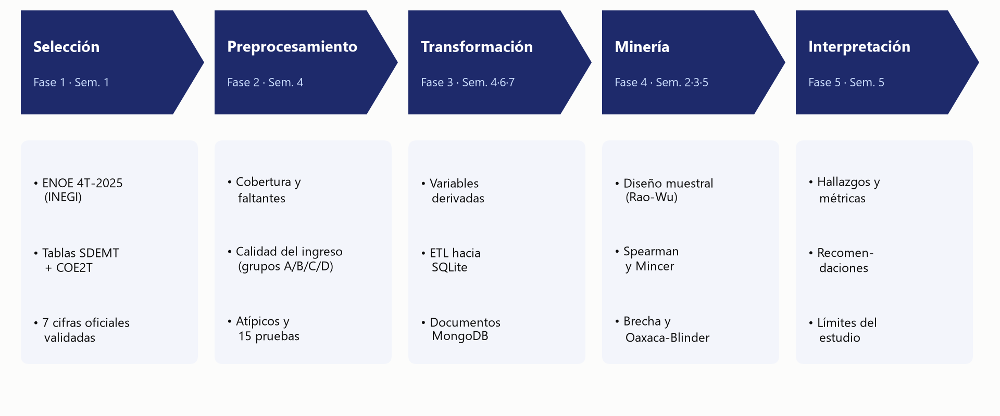
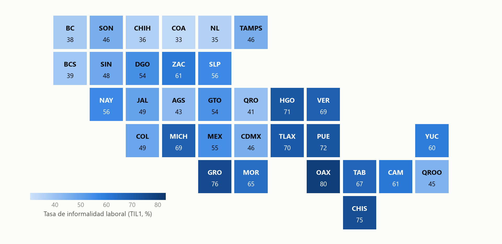

Resumen
Este trabajo documenta el Proyecto Integrador de Ciencia de Datos del Equipo 1: un ciclo completo de descubrimiento de conocimiento en bases de datos (KDD) aplicado a la Encuesta Nacional de Ocupación y Empleo (ENOE) del INEGI, 4.º trimestre de 2025 (419,038 registros). La pregunta de investigación es cuánto aumenta el ingreso laboral por cada año adicional de escolaridad en México, cómo cambia esa relación entre las 32 entidades federativas y si existe una brecha salarial significativa entre hombres y mujeres con la misma escolaridad.
Los datos se limpiaron con reglas documentadas y probadas, se validaron contra siete cifras oficiales del INEGI (las siete coinciden), se almacenaron en un modelo relacional (SQLite) y en uno documental (MongoDB) y se analizaron con técnicas que respetan el diseño muestral complejo de la encuesta (bootstrap de Rao-Wu con 1,000 réplicas). Se encontró además que el «ingreso cero» del archivo no significa ausencia de ingreso: 22 % de los ocupados solo declara un rango de salarios mínimos y 13 % no especifica.
Resultados. Cada año de escolaridad aumenta el ingreso por hora 5.1 % (IC 95 %: 5.0 a 5.3) y el rendimiento es prácticamente igual en estados ricos y pobres (p = 0.91). La brecha de género es de 3.7 % por hora y de 26.9 % por mes; la diferencia mensual se debe sobre todo a que las mujeres trabajan 24.1 % menos horas pagadas. Entre personas comparables la brecha por hora ronda 8 % y se concentra en la parte baja de la distribución. La informalidad laboral es de 55.0 %, varía de 33 % (Coahuila) a 80 % (Oaxaca) y cae de 87 % a 38 % conforme aumenta la escolaridad.
Los resultados describen asociaciones, no efectos causales; el documento discute las limitaciones (selección, medición del ingreso, un solo trimestre) y la forma en que se evaluó la robustez de cada conclusión.
Palabras claveENOEescolaridadingreso por horabrecha de géneroinformalidad laboraldiseño muestral complejobootstrap de Rao-WuOaxaca-BlinderSQLiteMongoDB
Abstract
This work documents a complete knowledge-discovery (KDD) cycle applied to Mexico’s National Survey of Occupation and Employment (ENOE, INEGI), fourth quarter of 2025 (419,038 records). It asks how much labor income rises with each additional year of schooling, how that relationship varies across the 32 states, and whether men and women with the same schooling earn significantly different hourly wages.
The data were cleaned with documented and tested rules, validated against seven official INEGI figures (all seven match), stored in a relational (SQLite) and a document (MongoDB) model, and analyzed with methods that respect the survey’s complex design (Rao–Wu bootstrap, 1,000 replicates). Each year of schooling is associated with a 5.1 % increase in hourly income (95 % CI: 5.0 to 5.3), with virtually no difference between richer and poorer states (p = 0.91). The gender gap is 3.7 % per hour and 26.9 % per month; the monthly difference comes mostly from women working 24.1 % fewer paid hours, while among comparable workers the hourly gap is about 8 %, concentrated at the bottom of the distribution and in informal jobs. Informal employment reaches 55.0 % of employed people, ranges from 33 % to 80 % across states and falls from 87 % to 38 % as schooling increases. The results describe associations, not causal effects.
KeywordsENOEschoolinghourly incomegender wage gapinformal employmentcomplex survey designRao–Wu bootstrapOaxaca–BlinderSQLiteMongoDB
Hallazgos clave
Cada tarjeta lleva a la sección donde se explica el resultado. Todos son asociaciones, no efectos causales.
Ficha técnica
- Fuente
- INEGI, Encuesta Nacional de Ocupación y Empleo (ENOE), 4.º trimestre de 2025; tablas SDEMT y COE2T (microdatos públicos)
- Datos
- 419,038 registros; universo de estudio: 190,187 personas ocupadas de 15 años o más; muestra salarial: 111,958 personas (33.4 millones ponderadas)
- Diseño muestral
- 724 estratos (713 tras fusionar los de una sola UPM) y 21,194 UPM; efecto de diseño de 4.8 en la tasa de informalidad
- Inferencia
- Bootstrap de Rao-Wu con 1,000 réplicas y una sola semilla (20251231); intervalos de confianza del 95 %; errores de diseño por linealización de Taylor en los modelos
- Almacenamiento
- SQLite con esquema en estrella (fact_ocupado: 190,187 filas × 36 columnas y 10 dimensiones) y MongoDB (32 documentos de entidad; carga probada con mongomock)
- Calidad
- 15 expectativas de datos cumplidas, 41 pruebas automáticas y 30 tablas de resultados idénticas en dos corridas
- Programas
- Python 3.12.10 · pandas 3.0.5 · NumPy 2.5.2 · SQLite 3.49.1
Rutas de lectura
20 minutos
Método y resultados
Cómo se midió y qué se encontró, sin el marco conceptual ni la ingeniería.
Lectura completa
Todo el documento
Los nueve capítulos, la bibliografía y los anexos.
Cómo citar
Culin Grajeda, J. E., Garcia Jara, A. Y., y Gutierrez Zuñia, L. A. (2026). Radiografía socioeconómica de México: escolaridad, ingreso y brecha de género [Tesina del Proyecto Integrador de Ciencia de Datos]. Universidad de Especialidades UNE, Plantel Centro. https://charginchif.github.io/proyecto-integrador-enoe/
Índice general
- 1Introducción4 min
- 2Marco conceptual: lo que hay que entender12 min
- 3Datos (KDD fase 1: Selección)4 min
- 4Preprocesamiento (KDD fase 2: limpieza)13 min
- 5Transformación e ingeniería de datos (KDD fase 3)12 min
- 6Metodología estadística (KDD fase 4: análisis)8 min
- 7Resultados27 min
- 7.1Panorama: la muestra salarial
- 7.2Rendimiento de la escolaridad (objetivo 1)
- 7.3Correlación escolaridad-ingreso por entidad (métrica M2)
- 7.4Brecha salarial de género por nivel de instrucción (métrica M1)
- 7.5Brecha entre personas comparables: la escalera de controles
- 7.6La brecha a lo largo de la distribución
- 7.7Robustez: ¿cambian las conclusiones si cambian las decisiones?
- 7.8Heterogeneidad: ¿en qué grupos es mayor la brecha?
- 7.9La brecha de género por entidad federativa
- 7.10Informalidad laboral y escolaridad (objetivo 3)
- 7.11Diagnósticos del modelo
- 8Discusión8 min
- 9Conclusiones2 min
- Referencias1 min
- Anexo AGlosario4 min
- Anexo BGuía para reproducir el proyecto2 min
- Anexo CResultados por entidad federativa5 min
- Anexo DPreguntas frecuentes de la defensa9 min
Índice de figuras (25)
- Figura 1Las cinco fases del ciclo KDD y qué se hizo en cada una.
- Figura 2Niveles del diseño muestral de la ENOE y significado del factor de expansión (fac_tri).
- Figura 3Ejemplo ilustrativo (seis personas): al convertir los valores en rangos, la correlación de Spearman resulta 0.93.
- Figura 4Cómo leer un intervalo de confianza con tres casos reales: uno que excluye el 0 (hay brecha), uno que lo toca (evidencia débil) y uno que lo incluye (no hay brecha demostrable).
- Figura 5El bootstrap de Rao-Wu en cuatro pasos (ejemplo con un estrato de cuatro UPM).
- Figura 6Idea de la descomposición de Oaxaca-Blinder con los resultados del proyecto (puntos logarítmicos, hombres − mujeres).
- Figura 7Embudo de datos: de 419,038 registros crudos a 190,187 personas ocupadas (universo), y de ahí a las muestras de análisis.
- Figura 8Calidad del ingreso por grupo de declaración: composición total, por sexo y por nivel de instrucción.
- Figura 9Distribución del ingreso por hora: en pesos (cola larga a la derecha) y en logaritmo natural (casi simétrica).
- Figura 10Arquitectura del proyecto: de los microdatos del INEGI a los resultados, el tablero y la base documental.
- Figura 11Esquema en estrella: la tabla de hechos fact_ocupado (190,187 filas) rodeada de diez tablas de dimensiones.
- Figura 12Mediana ponderada del ingreso por hora según los años de escolaridad, por sexo (escala logarítmica).
- Figura 13Rendimiento por año de escolaridad en cada entidad (con IC 95 %). El color indica el cuartil de ingreso mediano por hora del estado.
- Figura 14Correlación de Spearman entre escolaridad e ingreso por hora en cada entidad, con IC 95 % y lugar en el ranking.
- Figura 15Relación entre la escolaridad promedio y el ingreso mediano por hora entre estados (Spearman entre estados = 0.74; relación entre estados, no causal).
- Figura 16Distribución de ln(ingreso por hora) por nivel de instrucción y sexo.
- Figura 17Brecha salarial de género por hora, por nivel de instrucción (IC 95 %).
- Figura 18Escalera de controles: cómo cambia la brecha por hora al agregar controles (G6 no se interpreta).
- Figura 19Descomposición de la brecha total (en puntos logarítmicos) en parte explicada y no explicada, y contribución de cada grupo de características.
- Figura 20Brecha por hora en distintos percentiles del ingreso por hora (IC 95 %).
- Figura 21Robustez de la brecha por hora ante distintas decisiones metodológicas (S3 sesga hacia cero por construcción; S6 es otro estimando).
- Figura 22Brecha por hora por subgrupo (IC 95 %). Punto relleno: significativa con Holm (p < 0.05); hueco: no significativa.
- Figura 23Informalidad laboral por entidad (TIL1, %) en un cartograma de mosaicos: cada estado ocupa la misma área.
- Figura 24Informalidad laboral y escolaridad promedio de los ocupados de cada entidad.
- Figura 25Diagnósticos del modelo con todos los controles: residuos contra valores ajustados (izquierda) y gráfico Q-Q de normalidad (derecha).
Índice de tablas (46)
- Tabla 1Fases del ciclo KDD y su correspondencia con el documento.
- Tabla 2Variables laborales y sus definiciones.
- Tabla 3Tablas de origen utilizadas. SDEMT trae 115 columnas (se leen las 35 necesarias).
- Tabla 4Variables de origen utilizadas (diccionario completo en docs/diccionario_de_datos.md).
- Tabla 5Validación externa: cifras del proyecto frente a las publicadas por el INEGI para el 4T-2025.
- Tabla 6Embudo de filtros que define el universo de estudio (SDEMT, 4T-2025).
- Tabla 7Códigos especiales convertidos en valores faltantes.
- Tabla 8Los cuatro grupos de calidad del ingreso (ocupados de 15 a 65 años).
- Tabla 9Perfil promedio de cada grupo (ponderado).
- Tabla 10Asociación entre el grupo de ingreso y características de la persona (χ² con n = 180,766).
- Tabla 11Regresión logística de la no respuesta (errores estándar agrupados por UPM). Una razón de momios mayor que 1 aumenta la probabilidad.
- Tabla 12Tabla de imputación por rango. SM = salario mínimo mensual de la persona.
- Tabla 13Embudo de la muestra salarial.
- Tabla 14Expectativas de calidad de datos evaluadas en cada corrida (15 de 15 cumplidas).
- Tabla 15Principales variables derivadas en la fase de transformación.
- Tabla 16Objetos de la base de datos relacional (44 MB; además contiene 24 tablas de resultados res_).
- Tabla 17Justificación de la elección de modelo de datos.
- Tabla 18Consultas equivalentes.
- Tabla 19Conjunto de pruebas automáticas (41 en total).
- Tabla 20Mapa del código fuente.
- Tabla 21Poblaciones y muestras de análisis.
- Tabla 22Definiciones operativas de los indicadores.
- Tabla 23Efecto de diseño: cuánto cambia el error estándar al respetar estratos y UPM (el EE como muestreo aleatorio simple, m.a.s., es siempre menor).
- Tabla 24Estimadores y medidas de incertidumbre para cada objetivo.
- Tabla 25Decisiones metodológicas y cómo se evaluó su efecto.
- Tabla 26Descriptivos ponderados de la muestra salarial (n = 111,958, 33.4 millones de personas).
- Tabla 27Rendimiento por año de escolaridad según el modelo (n = 111,958). El modelo M3 es el de referencia.
- Tabla 28Premio salarial por nivel respecto a primaria incompleta (controlando edad, sexo y entidad).
- Tabla 29Rendimiento y correlación promedio por cuartil de ingreso estatal.
- Tabla 30Las cinco entidades con mayor y menor correlación (el ranking completo está en el Anexo C).
- Tabla 31Brecha salarial de género por hora, por nivel de instrucción ($/h = media geométrica del ingreso por hora).
- Tabla 32Pruebas sin ponderar de diferencia de ln(ingreso por hora) entre hombres y mujeres, como pide el protocolo.
- Tabla 33Brecha por hora, brecha mensual y diferencia de horas trabajadas.
- Tabla 34Brecha por hora ajustada: G0 es la brecha sin ajustar; G5 es la estimación de referencia; G6 sufre del sesgo de división y no se interpreta.
- Tabla 35Descomposición de Oaxaca-Blinder (referencia agrupada de Neumark); 1 centésima de log-punto ≈ 1 %.
- Tabla 36Brecha por hora en cinco puntos de la distribución.
- Tabla 37Robustez de la brecha total ante las decisiones metodológicas.
- Tabla 38Robustez del rendimiento de la escolaridad.
- Tabla 39Tasa de informalidad laboral (TIL1) por grupo.
- Tabla 40Las cinco entidades con mayor y menor informalidad (ranking completo en el Anexo C).
- Tabla 41Diagnósticos del modelo con todos los controles.
- Tabla 42Cumplimiento de las métricas de éxito del protocolo.
- Tabla 43Limitaciones del estudio.
- Tabla 44Salidas de cada paso de la ejecución.
- Tabla 45Informalidad (TIL1), escolaridad media de los ocupados e ingreso mediano por hora.
- Tabla 46Correlación de Spearman, rendimiento por año de escolaridad y brecha por hora en cada entidad.
Capítulo 1
Introducción
#1.1Contexto y motivación
La educación suele considerarse la principal vía de movilidad social, pero el mercado laboral mexicano combina una alta informalidad (más de la mitad de las personas ocupadas) con diferencias persistentes de ingreso entre regiones y entre mujeres y hombres. Saber cuánto «paga» un año adicional de estudio, si ese pago es parejo en todo el país y si mujeres y hombres con la misma preparación reciben el mismo ingreso son preguntas que orientan decisiones de política educativa, laboral y de igualdad de género.
La Encuesta Nacional de Ocupación y Empleo (ENOE) del INEGI es la principal fuente de información del mercado laboral mexicano: es una encuesta continua que cada trimestre entrevista a cientos de miles de personas y, mediante factores de expansión, permite estimar cifras para todo el país y para cada entidad federativa. Sus microdatos son públicos y anonimizados.
#1.2Pregunta de investigación
#1.3Objetivos
Objetivo general. Cuantificar la relación entre escolaridad e ingreso laboral y la brecha salarial de género en la población ocupada de México, por entidad federativa, a partir de los microdatos de la ENOE.
Objetivos específicos.
- Estimar la correlación y el retorno de un año adicional de escolaridad sobre el ingreso por hora en cada una de las 32 entidades, comparando estados de mayor y menor ingreso.
- Determinar si existe una diferencia estadísticamente significativa de ingreso por hora entre hombres y mujeres con el mismo nivel de instrucción.
- Identificar las entidades con mayor tasa de informalidad laboral y medir su relación con la escolaridad promedio.
#1.4Métricas de éxito
El protocolo del proyecto fijó tres métricas verificables, cuyo cumplimiento se evalúa en la sección 8.2:
- M1. Brecha salarial de género (%) en el ingreso por hora para cada nivel de instrucción, con intervalo de confianza del 95 % y prueba de hipótesis (significativa si p < 0.05).
- M2. Coeficiente de correlación escolaridad-ingreso (Spearman) para las 32 entidades, con intervalo de confianza por bootstrap, y un ranking de estados defendible.
- M3. Tablero con al menos cuatro visualizaciones interpretables por una persona no especialista, alimentado por un pipeline que carga datos limpios a una base NoSQL (MongoDB) consultable por entidad.
#1.5Alcance
El estudio es descriptivo y asociativo: mide cuánto se asocia la escolaridad con el ingreso y cuánto difieren los ingresos de mujeres y hombres, pero no estima efectos causales (no se puede asegurar que estudiar un año más cause un aumento de 5 %, porque quienes estudian más pueden diferir en habilidades, redes o contexto familiar). Se analiza un solo trimestre (4.º de 2025) y a las personas ocupadas de 15 años y más (15 a 65 años para el análisis salarial).
#1.6Cómo leer este documento
Este trabajo está pensado para que cualquier persona con conocimientos básicos de estadística —y no solo quien lo hizo— entienda qué se hizo, por qué y qué significa cada resultado:
- Los recuadros «En palabras sencillas» explican cada concepto sin tecnicismos.
- La sección 2 explica los conceptos (la encuesta, el diseño muestral, los métodos estadísticos, las bases de datos); las secciones 3 a 6 explican qué se hizo; la 7 muestra qué se encontró; la 8 lo interpreta.
- Los anexos incluyen un glosario, la guía para reproducir todo, los resultados de cada entidad y las preguntas frecuentes sobre el método.
- Todas las cifras de este documento se leen automáticamente de los archivos de resultados del proyecto (
results/), por lo que coinciden con el cuaderno, el tablero y la presentación. - En la versión web, las figuras marcadas como interactivas muestran sus datos al pasar el cursor; «Ver tabla» da los valores y «Imagen» la versión estática. Al elegir una entidad en la barra superior (o con un clic en una figura) se resalta en todas las figuras y en las tablas; los términos con subrayado punteado muestran su definición; la tecla / abre el buscador.
Capítulo 2
Marco conceptual: lo que hay que entender
Antes de ver qué se hizo conviene entender las ideas que sostienen el análisis. Esta sección las explica en lenguaje sencillo, de lo general (el método de trabajo) a lo particular (cada técnica).
#2.1El ciclo KDD
KDD (Knowledge Discovery in Databases) es el proceso completo que convierte datos crudos en conocimiento útil. No es solo «correr un modelo»: la mayor parte del trabajo está antes (elegir y limpiar los datos) y después (interpretar y comunicar). Tiene cinco fases, que corresponden a las semanas del curso:

| Fase | Semana | Qué se hace | Dónde está |
|---|---|---|---|
| 1. Selección | 1 | Elegir la fuente y el subconjunto de datos relevantes | Sección 3 |
| 2. Preprocesamiento | 4 | Limpiar: faltantes, duplicados, tipos, valores atípicos e imposibles | Sección 4 |
| 3. Transformación | 4 · 6 · 7 | Crear variables, unir tablas y almacenarlas (relacional y documental) | Sección 5 |
| 4. Minería / Análisis | 2 · 3 · 5 | Estadística, pruebas de hipótesis, regresión, visualización | Secciones 6 y 7 |
| 5. Interpretación | 5 | Extraer conocimiento, comunicarlo y recomendar | Secciones 8 y 9 |
#2.2La ENOE y su diseño muestral
¿Qué es la ENOE?
Es una encuesta del INEGI que se levanta de manera continua en las viviendas del país. Cada trimestre el INEGI publica una base de microdatos: archivos en los que cada fila es una persona (tabla SDEMT, sociodemográfica y laboral) o un cuestionario (tablas COE1T y COE2T, ocupación y empleo). En el 4.º trimestre de 2025 la tabla SDEMT trae 419,038 personas y 115 columnas. Cada vivienda se entrevista hasta cinco veces consecutivas (panel rotativo, variable n_ent).
Diseño probabilístico, estratificado y por conglomerados
No se entrevista a una muestra «al azar simple» de personas: sería carísimo recorrer el país. En su lugar se usa un diseño bietápico, estratificado y por conglomerados: primero se agrupan áreas parecidas en estratos, luego se sortean Unidades Primarias de Muestreo (UPM), que son conjuntos de viviendas, y dentro de ellas se eligen viviendas y personas. En este trimestre hay 724 estratos y 21,194 UPM.

El factor de expansión: por qué cada persona pesa distinto
Cada persona de la base trae un número, fac_tri, que indica a cuántas personas de la población representa. Las personas de algunas zonas se entrevistan con mayor o menor probabilidad, y el factor corrige eso: la suma de fac_tri en toda la base es 131.0 millones de personas (la población del país) y la de las personas ocupadas de 15 años y más es 59.8 millones. Por eso todos los promedios, porcentajes y totales de este trabajo están ponderados: un promedio sin ponderar describiría a la muestra, no al país.
Efecto de diseño: la muestra «vale» menos de lo que parece
Las personas de una misma UPM se parecen entre sí (viven en la misma zona, tienen empleos similares), así que aportan menos información que personas elegidas al azar en todo el país. El efecto de diseño (deff) mide cuánto más grande es la varianza real que la de una muestra aleatoria simple: para la tasa de informalidad es de 4.8, de modo que los 190,187 ocupados de la base equivalen a unas 40 mil observaciones independientes. Ignorarlo haría que los intervalos de confianza fueran aproximadamente la mitad de anchos de lo que deberían y que todo pareciera «significativo».
#2.3Las variables laborales
| Concepto | Definición |
|---|---|
| Persona ocupada | Persona de 15+ años que trabajó al menos una hora la semana de referencia (clase2 = 1). |
Ingreso mensual (ingocup) | Ingreso mensual de la ocupación principal, en pesos. Vale 0 si la persona no dio un monto exacto (ver sección 4.3). |
Horas trabajadas (hrsocup) | Horas trabajadas la semana pasada. |
| Ingreso por hora | ingocup / (hrsocup × 4.3); 4.3 es el número de semanas por mes que usa el INEGI. Coincide con la variable ing_x_hrs del INEGI (error relativo < 0.01 %). |
Salario mínimo (salario) | Salario mínimo mensual de la zona de la persona: $8,364 (zona general) o $12,596 (frontera norte). |
Escolaridad (anios_esc, niv_ins) | Años de escolaridad aprobados y nivel de instrucción (primaria incompleta, primaria completa, secundaria completa, medio superior y superior). |
Informalidad (emp_ppal) | Empleo informal en la ocupación principal. TIL1 = personas ocupadas en empleo informal ÷ personas ocupadas de 15+ años, definición oficial del INEGI. |
Entidad (cve_ent) | Clave de la entidad federativa, 1 a 32. |
#2.4Estadística en palabras sencillas
Cada técnica se explica con la misma estructura: la idea, cómo se calcula y cómo se lee.
Logaritmo natural y media geométrica
La idea. El ingreso por hora tiene una «cola larga»: la mayoría gana poco y unas pocas personas ganan muchísimo, lo que distorsiona los promedios. Con el logaritmo natural, esa cola se acorta y la distribución se vuelve casi simétrica (la asimetría pasa de 3.1 a 0.06).
Cómo se calcula. Se trabaja con ln(ingreso por hora). Una propiedad útil: la diferencia entre dos logaritmos es, aproximadamente, una diferencia porcentual (ln 110 − ln 100 = 0.095 ≈ 10 %). El promedio de los logaritmos, devuelto a pesos con la exponencial, es la media geométrica.
Cómo se lee. Cuando se dice «las mujeres ganan 3.7 % menos por hora» se comparan las medias geométricas de ingreso por hora de mujeres y hombres.
Correlación de Spearman
La idea. Mide si dos variables «suben juntas»: si las personas con más escolaridad tienden a tener más ingreso, sin importar la forma exacta de la relación ni los valores extremos.
Cómo se calcula. Se reemplaza cada valor por su lugar (rango) entre todos los valores (el más bajo es 1) y se calcula la correlación de Pearson entre los rangos. Los empates reciben el rango medio. En este proyecto cada persona cuenta tantas veces como su fac_tri (rangos medios ponderados). El ejemplo siguiente usa seis personas ilustrativas.

Cómo se lee. Va de −1 (relación inversa perfecta) a +1 (perfecta), y 0 significa que no hay relación monótona. Como referencia común, alrededor de 0.1 es débil, 0.3 moderada y 0.5 fuerte. La correlación nacional entre escolaridad e ingreso por hora es 0.34 (moderada).
Regresión lineal y ecuación de Mincer
La idea. Una regresión estima cuánto cambia una variable (aquí, el ingreso) cuando cambia otra (los años de escolaridad), manteniendo constantes las demás (edad, sexo, entidad...). La ecuación de Mincer (1974) es el modelo clásico de la economía laboral para medir el rendimiento de la educación.
Cómo se lee. El coeficiente β mide cuánto aumenta el logaritmo del ingreso por cada año de escolaridad; el aumento porcentual es 100 × (e^β − 1). Si β = 0.0501, un año más de estudio se asocia con +5.1 % de ingreso por hora; dos años, con (1.051)² − 1 = +10.5 %. La edad entra al cuadrado porque el ingreso sube con la experiencia y luego se aplana.
Brecha salarial de género
La idea y el cálculo. Se compara el ingreso medio geométrico de mujeres y hombres:
Ejemplo con los datos. Los hombres ganan en promedio geométrico $52.53 por hora y las mujeres $50.60: la brecha es 1 − 50.60/52.53 = 3.7 %. Un valor negativo indicaría que las mujeres ganan más.
Pruebas de hipótesis, valor p e intervalo de confianza
La idea. Como trabajamos con una muestra, toda diferencia observada podría deberse al azar. Una prueba de hipótesis plantea una hipótesis nula (H₀: no hay brecha) y calcula el valor p: la probabilidad de observar una diferencia tan grande como la que vimos si en realidad no hubiera brecha. Si p < 0.05 (nivel α = 5 %) se rechaza H₀ y se dice que la diferencia es estadísticamente significativa.
El intervalo de confianza (IC) del 95 % da un rango de valores plausibles para la cantidad real: si el estudio se repitiera muchas veces, el 95 % de los intervalos construidos así contendría el valor verdadero. Si el intervalo no incluye el 0, la diferencia es significativa; si lo incluye, no se puede afirmar que exista.

Comparaciones múltiples: la corrección de Holm
Si se hacen muchas pruebas, algunas saldrán «significativas» solo por azar. La corrección de Holm (1979) controla la probabilidad de equivocarse al menos una vez en todo el conjunto: ordena los valores p de menor a mayor y los compara con umbrales cada vez menos exigentes. Se aplica a las cuatro pruebas por nivel de instrucción y a las categorías de cada dimensión de heterogeneidad.
Tamaño del efecto: la d de Cohen
Con muchas observaciones casi cualquier diferencia resulta «significativa». Para saber si importa en la práctica se mide su tamaño: la d de Cohen es la diferencia de medias dividida entre la desviación estándar (0.2 se considera pequeña, 0.5 mediana y 0.8 grande). Significativo no significa grande.
Bootstrap de Rao-Wu y linealización de Taylor
La idea. Para medir la incertidumbre (el error estándar) hay que saber cuánto cambiaría el resultado si se repitiera la encuesta. No se puede repetir, pero se puede simular: el bootstrap vuelve a muestrear los propios datos. Como la ENOE es por conglomerados, lo que se remuestrea no son personas sino UPM completas, respetando los estratos. El método de Rao y Wu (1988) lo hace de forma que reproduce correctamente la varianza del diseño.

Cómo se usa. Con 1,000 réplicas, la desviación estándar de las estimaciones replicadas es el error estándar y los percentiles 2.5 y 97.5 son el intervalo de confianza del 95 %. Para los modelos de regresión y logit se usa en cambio la linealización de Taylor, una fórmula analítica equivalente que también respeta estratos y UPM. En las pruebas del proyecto, ambos métodos coinciden (dentro de 8 %).
Descomposición de Oaxaca-Blinder
La idea. Separa la brecha entre dos grupos en dos partes: la explicada (los grupos difieren en sus características: escolaridad, edad, lugar de residencia, tipo de empleo...) y la no explicada (a las mismas características se les paga distinto). Se usa la referencia agrupada de Neumark (1988): los coeficientes de comparación salen de una regresión con hombres y mujeres juntos.

Cómo se lee. La parte no explicada no prueba discriminación: incluye todo lo que no se pudo medir (ocupación específica, experiencia real, negociación, selección).
No respuesta: imputación por rangos y ponderación por probabilidad inversa (IPW)
Cuando una parte de la muestra no responde y quienes no responden son distintos de quienes sí, los resultados se sesgan. Se usan dos correcciones: imputar el ingreso de quien solo dio un rango (asignándole el ingreso típico de quienes ganan en ese rango) y IPW, que da más peso a quienes se parecen a los que no respondieron (peso = 1 ÷ probabilidad de responder, estimada con una regresión logística).
Regresión logística
Cuando la variable que se explica es sí/no (por ejemplo, tener un empleo informal), se usa un logit. Sus coeficientes se leen como razones de momios (odds ratio): un valor de 0.82 por año de escolaridad significa que cada año reduce 18 % los momios de ser informal. Para una lectura más directa se reporta el efecto marginal promedio: cuántos puntos porcentuales cambia la probabilidad.
#2.5Ingeniería de datos
- ETL (Extract, Transform, Load): proceso que extrae los datos de su fuente, los transforma (limpia, une, calcula variables) y los carga en un almacén. Aquí es un programa en Python que se puede ejecutar de principio a fin.
- Base de datos relacional (SQL): guarda los datos en tablas con columnas de tipos fijos y relaciones entre tablas. Es ideal para datos tabulares y para agregaciones (
GROUP BY,JOIN). Las restricciones (PRIMARY KEY,FOREIGN KEY,CHECK) impiden guardar datos inconsistentes. - Esquema en estrella: una tabla central de hechos (aquí, una fila por persona ocupada) rodeada de tablas de dimensiones pequeñas (entidad, sexo, nivel de instrucción...).
- Base de datos documental (NoSQL): guarda documentos JSON anidados, sin esquema rígido. Es ideal para servir «la ficha completa» de un elemento (una entidad) con una sola lectura.
- Persistencia políglota: usar cada tipo de base donde mejor funciona. Aquí, SQLite para analizar y MongoDB para servir la ficha de cada entidad.
- Idempotencia y determinismo: ejecutar el proceso dos veces produce exactamente el mismo resultado (se fija una semilla para todo lo aleatorio y se recrea la base desde cero).
Capítulo 3
Datos (KDD fase 1: Selección)
#3.1Fuente y archivos
Se usan los microdatos de la ENOE del 4.º trimestre de 2025, publicados por el INEGI (https://www.inegi.org.mx/programas/enoe/15ymas/) en archivos CSV con codificación latin-1. El paquete incluye cinco tablas; el proyecto usa dos y guarda la huella SHA-256 de cada archivo para poder demostrar con qué datos se corrió todo.
| Tabla | Archivo | Filas | Columnas leídas | MB | SHA-256 (inicio) |
|---|---|---|---|---|---|
| SDEMT | ENOE_SDEMT425.csv | 419,038 | 35 | 118 | c3e8d9ea23d695c1… |
| COE2T | ENOE_COE2T425.csv | 344,166 | 14 | 69 | fabf6491712394f1… |
- SDEMT (sociodemográfica y laboral): una fila por residente del hogar, de todas las edades; trae el ponderador, el diseño muestral, la escolaridad, el ingreso y las horas.
- COE2T (cuestionario de ocupación, parte 2): el detalle de cómo se captó el ingreso (monto, o rango de salarios mínimos cuando no hubo monto).
- Las tablas COE1T, HOGT y VIVT no aportan variables al problema y no se usan.
#3.2Llave de persona y unión de tablas
Para unir SDEMT con COE2T hace falta una llave que identifique a cada persona. La llave que se cita habitualmente (cd_a, ent, con, v_sel, n_hog, h_mud, n_ren) no es única en este trimestre: tiene 8,371 duplicados. Se comprobó empíricamente que la combinación cd_a, cve_ent, con, upm, d_sem, n_pro_viv, v_sel, n_hog, h_mud, n_ent, n_ren sí lo es (0 duplicados en ambas tablas). La unión se hace con la condición «uno a uno»: si alguna persona ocupada de SDEMT no encontrara pareja en COE2T, el proceso se detiene. Resultado: los 190,187 ocupados encuentran su pareja.
#3.3Variables utilizadas
| Variable | Tabla | Significado | Valores / notas |
|---|---|---|---|
| r_def, c_res | SDEMT | Resultado de la entrevista; condición de residencia | r_def = 0 (completa); c_res ∈ {1, 3} (residente habitual) |
| cve_ent | SDEMT | Entidad federativa | 1 a 32 |
| upm, est_d_tri | SDEMT | Unidad primaria de muestreo y estrato de diseño | 21,194 UPM en 724 estratos |
| fac_tri | SDEMT | Factor de expansión trimestral | > 0; suma 131.0 millones |
| sex, eda | SDEMT | Sexo y edad | sex: 1 hombre, 2 mujer; eda: 0 a 98 |
| niv_ins, anios_esc | SDEMT | Nivel de instrucción y años de escolaridad | anios_esc = 99 significa «no especificado» |
| clase1, clase2 | SDEMT | Condición de actividad | clase2 = 1: ocupado |
| pos_ocu | SDEMT | Posición en la ocupación | 1 subordinado, 2 empleador, 3 cuenta propia, 4 sin pago |
| emp_ppal | SDEMT | Empleo informal en la ocupación principal | 1 informal, 2 formal |
| rama_est2 | SDEMT | Gran rama de actividad | 11 ramas |
| t_loc_tri, salario | SDEMT | Tamaño de localidad; salario mínimo mensual | 4 tamaños; $8,364 / $12,596 |
| hrsocup | SDEMT | Horas trabajadas la semana pasada | 0 a 168 |
| ingocup, ing_x_hrs, ing7c | SDEMT | Ingreso mensual, ingreso por hora y rango en salarios mínimos | ingocup = 0 si no hay monto exacto |
| p6b2, p6c | COE2T | Monto declarado; rango de salarios mínimos | p6c: 1 a 7 rangos, 8 no sabe, 9 no respondió |
#3.4Validación externa: ¿las cifras coinciden con las oficiales?
Antes de analizar nada se comprobó que los filtros y los ponderadores reproducen lo que el INEGI publicó para este trimestre. Si coinciden, se interpretan bien los códigos y los factores de expansión y los resultados son comparables con la estadística oficial. La base oficial es: personas ocupadas de 15 años y más, entrevista completa, residentes habituales, ponderadas con fac_tri.
| Indicador | Proyecto | INEGI (publicado) | ¿Coincide? |
|---|---|---|---|
| PEA (millones) | 61.35 | 61.3 | ✓ Sí |
| Tasa de participación (%) | 59.28 | 59.3 | ✓ Sí |
| Ocupación informal (millones) | 32.88 | 32.9 | ✓ Sí |
| TIL1 nacional (%) | 55.00 | 55.0 | ✓ Sí |
| TIL1 Chiapas (%) | 74.90 | 74.9 | ✓ Sí |
| TIL1 Chihuahua (%) | 36.19 | 36.2 | ✓ Sí |
| TIL1 Ciudad de México (%) | 45.71 | 45.7 | ✓ Sí |
Las siete comparaciones coinciden al redondear a la precisión publicada. Un hallazgo de la validación: si se incluyeran los 1,078 menores de 15 años que aparecen como ocupados en la muestra, el TIL1 subiría de 55.00 % a 55.27 % y dejaría de coincidir con el oficial; por eso toda la población de estudio se restringe a 15 años y más.
Capítulo 4
Preprocesamiento (KDD fase 2: limpieza)
Los datos crudos nunca están listos para analizarse: traen personas que no corresponden a la población de estudio, códigos que significan «no sabe» y no cantidades, jornadas imposibles y, sobre todo en esta encuesta, un ingreso que vale cero por razones muy distintas. Esta sección explica cada decisión de limpieza, cuántos registros afectó y por qué se tomó. El principio rector es marcar, no borrar: el universo completo se conserva en la base de datos y cada análisis elige, mediante banderas, qué registros usa.
#4.1Bitácora de limpieza: del archivo crudo al universo de estudio
Cada regla se registra en una bitácora (etl_bitacora, tabla del modelo relacional) con el número de registros antes y después. Así cualquier persona puede auditar cuántos registros se perdieron en cada paso y por qué.
| Paso | Regla | Antes | Después | Excluidos |
|---|---|---|---|---|
| L0 | Registros crudos (todas las personas del hogar) | 419,038 | 419,038 | 0 |
| L1 | Entrevista completa (r_def = 0) | 419,038 | 418,146 | 892 |
| L2 | Residente habitual (c_res ∈ {1, 3}) | 418,146 | 408,099 | 10,047 |
| L3 | Edad válida de 15 a 98 años | 408,099 | 323,367 | 84,732 |
| L4 | Población ocupada (clase2 = 1) | 323,367 | 190,187 | 133,180 |
| L5 | Ponderador positivo (fac_tri > 0) | 190,187 | 190,187 | 0 |

¿Por qué este gráfico?
Barras horizontales porque comparan cantidades del mismo tipo (registros) y los nombres largos caben mejor. El eje parte de cero, así que la longitud de cada barra es proporcional a la cantidad.
- L1 (892 excluidos). Solo se usan entrevistas completas; las incompletas no tienen datos laborales confiables.
- L2 (10,047). Se excluyen los «nuevos residentes» (
c_res = 2), que el INEGI no considera parte de la población residente habitual y para quienes no se captan sexo ni edad. - L3 (84,732). Se conservan las personas de 15 años o más con edad especificada. Esta restricción es la que hace coincidir el proyecto con la definición oficial de población ocupada.
- L4 (133,180). Se conservan las personas ocupadas, que son el objeto de estudio.
- L5 (0). Se comprueba que todos los ponderadores sean positivos; es una verificación, no excluye a nadie.
#4.2Datos faltantes y códigos especiales
En los archivos del INEGI, un dato desconocido casi nunca aparece vacío: aparece como un código especial (99 años de escolaridad, nivel «no especificado», 0 horas...). Si se tratara ese 99 como un número real, se obtendrían promedios absurdos. Por eso cada código se convierte explícitamente en valor faltante y se registra:
| Marca | Variable | Código | Registros | Tratamiento |
|---|---|---|---|---|
| M1 | anios_esc | 99 = no especificado | 610 | Se convierte en faltante; esa persona no entra al análisis de escolaridad. |
| M2 | hrsocup | 0 horas trabajadas la semana pasada | 5,278 | Faltante: están ocupadas pero ausentes de su trabajo esa semana; no se puede calcular el ingreso por hora. |
| M3 | hrsocup | > 112 horas semanales | 41 | Faltante: 112 h equivale a 16 h diarias los 7 días; se considera un error de captura. |
| M4 | niv_ins | 5 = no especificado | 479 | Se excluye del análisis por nivel de instrucción. |
Los faltantes son una fracción muy pequeña del universo (menos de 3 % en el peor caso), por lo que una eliminación simple no cambia las conclusiones. El caso importante no es este sino el del ingreso, que se trata en la siguiente sección.
#4.3El problema del «ingreso cero»
La variable de ingreso mensual (ingocup) vale cero en 36 % de los registros (39 % de la población ponderada). Tomarla literalmente sería un error grave: no son personas que ganen cero. El INEGI capta el ingreso en dos pasos: primero se pregunta el monto exacto y, si la persona no lo da, se le ofrece una lista de rangos en salarios mínimos. ingocup solo guarda el monto exacto, y vale 0 cuando no lo hay. Para entender por qué vale 0 se cruza con el rango (ing7c) y se obtienen cuatro grupos mutuamente excluyentes y exhaustivos:
| Grupo | Qué significa | Registros | % ponderado (IC 95 %) | Tratamiento |
|---|---|---|---|---|
| A | Monto exacto declarado (ingocup > 0) | 120,948 | 60.8 % (60.2–61.4) | Es la única con ingreso conocido. Constituye la muestra salarial. |
| B | Solo rango de salarios mínimos (ingocup = 0, ing7c 1 a 5) | 36,438 | 22.2 % (21.7–22.8) | Ingreso acotado entre dos valores; se imputa en el análisis de sensibilidad. |
| C | No recibe ingresos (ing7c = 6) | 7,666 | 4.2 % (4.1–4.5) | Cero verdadero: 77 % son trabajadores sin pago. Se excluye del análisis salarial. |
| D | No especificó (ing7c = 7) | 25,135 | 12.7 % (12.3–13.1) | Ingreso desconocido; se excluye y se estudia como no respuesta. |

¿Por qué este gráfico?
Los cuatro grupos suman 100 %, así que se muestran como partes de un todo en barras apiladas. Cada barra es una población (total, sexo, nivel) y se comparan sus composiciones; todas llevan el porcentaje escrito y los colores se distinguen también en escala de grises.
¿Quiénes pertenecen a cada grupo?
| Grupo | Millones | % mujeres | Años esc. | Edad | % informal | % cuenta propia | % sin pago | Horas/sem. |
|---|---|---|---|---|---|---|---|---|
| A | 34.5 | 42 | 10.5 | 39 | 57 | 19 | 0 | 41 |
| B | 12.6 | 40 | 11.9 | 40 | 43 | 22 | 0 | 43 |
| C | 2.4 | 48 | 8.7 | 36 | 99 | 21 | 77 | 33 |
| D | 7.2 | 39 | 12.2 | 40 | 43 | 21 | 0 | 42 |
El grupo C es distinto de los demás: casi todas sus personas son informales (99 %), 77 % son trabajadores sin pago y tienen menos escolaridad. Los grupos B y D tienen más escolaridad que el A, lo que anticipa que la no respuesta del monto no es aleatoria.
¿La no respuesta es aleatoria? Pruebas χ² y regresión logística
| Variable que se cruza con el grupo | χ² | g.l. | Valor p | V de Cramér |
|---|---|---|---|---|
| Sexo | 333 | 3 | < 0.001 | 0.043 |
| Nivel de instrucción | 5,302 | 9 | < 0.001 | 0.099 |
| Informalidad | 8,512 | 3 | < 0.001 | 0.217 |
| Posición | 147,483 | 9 | < 0.001 | 0.521 |
Todas las asociaciones son estadísticamente significativas, pero la V de Cramér (0 = sin asociación, 1 = asociación perfecta) revela su tamaño real: mínima con el sexo (0.04), pequeña con el nivel de instrucción (0.10), moderada con la informalidad (0.22) y fuerte con la posición en la ocupación (0.52), lo que es lógico porque el grupo C está formado por trabajadores sin pago.
| Característica | Declarar monto exacto (A) · razón de momios | No especificar el ingreso (D) · razón de momios |
|---|---|---|
| Mujer | 1.26 (1.22–1.31) | 0.83 (0.79–0.87) |
| Un año más de escolaridad | 0.93 (0.93–0.94) | 1.08 (1.07–1.08) |
| Empleo informal | 1.43 (1.36–1.50) | 0.84 (0.78–0.89) |
| Empleador (vs. subordinado) | 0.58 (0.54–0.63) | 1.54 (1.39–1.71) |
| Cuenta propia (vs. subordinado) | 0.63 (0.60–0.67) | 1.36 (1.26–1.47) |
| Un año más de edad | 0.99 (0.99–1.00) | 1.01 (1.00–1.01) |
Lectura. Cada año adicional de escolaridad reduce 6.6 % los momios de declarar el monto exacto (razón de momios 0.93) y aumenta 7.5 % los de no especificar el ingreso (1.08). Las mujeres tienen mayor probabilidad de declarar el monto exacto (1.26) y los empleadores y trabajadores por cuenta propia, menor. La conclusión es importante: quienes aparecen en la muestra salarial no son un subconjunto aleatorio; tienden a tener menos escolaridad que quienes no declaran. Si esa selección distorsionara los resultados, se vería en los análisis de sensibilidad (imputación de rangos y ponderación por probabilidad inversa), que se presentan en las secciones 6 y 7.
#4.4Imputación del ingreso a partir del rango (grupo B)
A las personas del grupo B se les conoce el rango (por ejemplo «más de 2 a 3 salarios mínimos»), pero no el monto. Para aprovechar esa información en el análisis de sensibilidad se les asigna un valor plausible con una imputación hot-deck por rango: se calcula la mediana ponderada de (ingreso ÷ salario mínimo) entre quienes sí declararon un monto exacto dentro del mismo rango y se multiplica por el salario mínimo de la persona. Se usa la mediana observada y no el punto medio del rango porque la distribución dentro del rango es asimétrica: hay más personas cerca del límite inferior que del superior.
| Código p6c | Rango declarado | Referencia (grupo A en el rango) | Mediana imputada (× SM) | Personas del grupo B |
|---|---|---|---|---|
| 1 | Menos de 1 SM | 51,496 | 0.62 | 7,994 |
| 2 | Exactamente 1 SM | 88 | 1.00 | 11,664 |
| 3 | Más de 1 a 2 SM | 53,258 | 1.29 | 12,684 |
| 4 | Más de 2 a 3 SM | 10,386 | 2.39 | 3,154 |
| 5 | Más de 3 a 5 SM | 4,304 | 3.59 | 762 |
| 6 | Más de 5 a 10 SM | 1,296 | 5.98 | 134 |
| 7 | Más de 10 SM | 120 | 11.96 | 46 |
Ejemplo: una persona de la zona general que declaró «más de 2 a 3 salarios mínimos» recibe 2.39 × $8,364 = $20,000 mensuales (la mediana de quienes declararon un monto en ese rango). Para el rango «exactamente 1 SM» se asigna 1.00 por definición.
#4.5Valores atípicos
Un ingreso por hora de $5 o de $900 puede ser un error de captura o una persona verdaderamente extrema. Para que unas pocas observaciones no dominen los resultados se excluye el 0.5 % más bajo y el 0.5 % más alto de ln(ingreso por hora) dentro de cada entidad (percentiles P0.5 y P99.5). El corte se hace por entidad, y no a nivel nacional, para no eliminar sistemáticamente a los habitantes de las entidades más ricas o más pobres. En total se marcan 1,133 observaciones (1.0 % de las 113,338 con ingreso por hora calculable). Los umbrales varían de $2 a $15 por hora en el extremo inferior y de $254 a $594 en el superior, según la entidad.

¿Por qué este gráfico?
El histograma muestra la forma de la distribución. Dos paneles lado a lado (pesos y logaritmo) enseñan por qué el ingreso se transforma: la cola larga de la izquierda casi desaparece en la derecha. Las alturas están ponderadas con el factor de expansión.
El logaritmo corrige la asimetría: de 3.07 en pesos a 0.06 en logaritmo, y la curtosis en exceso baja de 14.2 a 1.2. El recorte se evalúa además como análisis de sensibilidad (especificación sin recortar, sección 7.7).
#4.6Muestras de análisis
Del universo de 190,187 ocupados se derivan las muestras de análisis mediante exclusiones sucesivas, todas registradas:
| Paso | Descripción | Personas | Excluidas |
|---|---|---|---|
| W0 | Ocupados de 15 a 65 años | 181,198 | 0 |
| W1 | con monto exacto de ingreso (grupo A) | 115,785 | 65,413 |
| W2 | con horas trabajadas válidas (1-112) | 113,338 | 2,447 |
| W3 | con escolaridad y nivel especificados | 113,088 | 250 |
| W4 | sin ingreso por hora atípico (P0.5-P99.5 por entidad) | 111,958 | 1,130 |
- Universo (190,187): todas las personas ocupadas de 15 años o más. Se usa para informalidad (TIL1), escolaridad y la validación externa.
- Ventana 15 a 65 años (181,198): edades en las que la relación ingreso-educación es más estable (excluye a quienes ya se retiran).
- Muestra salarial (111,958, equivale a 33.4 millones de personas): ventana 15-65 con monto exacto de ingreso, horas válidas, escolaridad y nivel especificados y sin ingreso atípico. Es la base de todos los resultados salariales.
- Muestra salarial ampliada (145,529): agrega a las personas del grupo B con ingreso imputado; solo para sensibilidad.
La mayor pérdida del embudo (65,413 personas) es la del paso W1: quienes no declararon un monto exacto de ingreso. Por eso el análisis de sensibilidad de la selección es una parte central de este trabajo.
#4.7Pruebas automáticas de calidad de los datos (15 «expectativas»)
Después de limpiar y transformar, el ETL verifica 15 expectativas sobre la base resultante. Son afirmaciones que deben ser verdaderas si los datos están bien; si alguna crítica falla, el proceso se detiene con un error en lugar de continuar con datos dudosos (es el equivalente a las pruebas unitarias, pero aplicadas a los datos).
| # | Expectativa | ¿Cumple? | Tipo | Detalle |
|---|---|---|---|---|
| 1 | persona_id único | ✓ Sí | Crítica | 190,187 ids distintos / 190,187 filas |
| 2 | 32 entidades presentes | ✓ Sí | Crítica | 32 entidades |
| 3 | sexo en {1,2} | ✓ Sí | Crítica | [1, 2] |
| 4 | edad entre 15 y 98 | ✓ Sí | Crítica | min=15, max=98 |
| 5 | ponderador positivo | ✓ Sí | Crítica | min=12 |
| 6 | todos son ocupados | ✓ Sí | Crítica | clase2 == 1 |
| 7 | grupo de ingreso exhaustivo | ✓ Sí | Crítica | A 120,948 · B 36,438 · C 7,666 · D 25,135 |
| 8 | ing7c consistente con ingocup/salario mínimo | ✓ Sí | Crítica | 100 % de los registros del grupo A |
| 9 | ing_x_hrs = ingocup / (hrsocup x 4.3) | ✓ Sí | Crítica | máxima diferencia relativa 7.25e-05 |
| 10 | niv_ins=1 implica <= 5 años de escolaridad | ✓ Sí | Crítica | 12,416 registros |
| 11 | niv_ins=4 implica >= 12 años de escolaridad | ✓ Sí | Crítica | 93,188 registros |
| 12 | horas entre 0 y 168 (crudas) | ✓ Sí | Crítica | max=168 |
| 13 | ingocup entre 0 y 1,000,000 | ✓ Sí | Crítica | max=250,000 |
| 14 | p6c (COE2T) reproduce ing7c (SDEMT) en el grupo B | ✓ Sí | Crítica | 100 % de 36,438 registros |
| 15 | ingocup == p6b2 (COE2T) en el grupo A | ✓ Sí | Informativa | 100 % de 120,948 registros |
Dos de ellas validan el ingreso contra una segunda fuente: la expectativa 9 comprueba que el ingreso por hora recalculado (ingocup / (hrsocup × 4.3)) coincide con la variable ing_x_hrs del INEGI, y la 14 que el rango p6c de la tabla COE2T reproduce al 100 % el rango ing7c de SDEMT; esto confirma que la unión de tablas y la interpretación de los códigos son correctas.
Capítulo 5
Transformación e ingeniería de datos (KDD fase 3)
Con los datos limpios, esta fase crea las variables que usarán los modelos y los guarda en una arquitectura pensada para analizar y para servir los resultados. Es la parte de «ingeniería de datos» del proyecto: no solo importa el resultado, sino que el proceso sea repetible, auditable y verificable.
#5.1Variables derivadas
| Variable | Definición | Para qué sirve |
|---|---|---|
mujer | 1 si sex = 2, 0 si hombre | Variable binaria para regresiones y la brecha de género. |
edad2 | eda² / 100 | Término cuadrático de la edad (el ingreso sube con la experiencia y luego se aplana). Se divide entre 100 para que el coeficiente sea legible. |
grupo_edad | 15-24, 25-34, 35-44, 45-54, 55-64, 65+ | Heterogeneidad por edad (sección 7.8). |
informal | 1 si emp_ppal = 1, 0 si formal | Variable de informalidad (TIL1). |
niv_det | Nivel 4 dividido: medio superior (4) vs. superior (5, con 16+ años) | Detalle del nivel de instrucción para el premio por nivel. |
entidad, region | Nombre y región (Norte, Centro-Norte, Centro, Sur) | Etiquetas y análisis regional. |
log_horas | ln(hrsocup) | Control de horas trabajadas. |
grupo_ingreso | A, B, C o D según ingocup e ing7c | Calidad del ingreso (sección 4.3). |
ing_mensual | ingocup solo en el grupo A | Ingreso mensual conocido. |
ing_hora | ingocup / (hrsocup × 4.3) (grupo A, horas válidas) | Ingreso por hora; se verifica contra el del INEGI. |
ln_ing_hora | ln(ing_hora) | Variable dependiente de los modelos. |
ing_mensual_imp, ing_hora_imp | Imputación por rango para el grupo B | Solo en análisis de sensibilidad. |
persona_id | Concatenación de la llave de 11 campos | Llave primaria legible. |
Siete banderas (en_ventana_15_65, anios_esc_valido, horas_validas, nivel_especificado, outlier_ing_hora, en_muestra_salarial y en_muestra_salarial_ext) definen, combinadas, las muestras de análisis. La tabla de hechos guarda 36 columnas para las 190,187 personas ocupadas; las transformaciones puramente algebraicas (mujer, edad2, log_horas) se calculan en el momento del análisis.
#5.2Arquitectura del proyecto
El proyecto es una tubería de datos de cinco etapas con dos almacenes. Cada etapa es una función de Python independiente, probada por separado y encadenada por un orquestador (pipeline.py):

- Microdatos (CSV del INEGI) → ETL (extraer, limpiar, transformar, validar) → SQLite (almacén relacional, fuente de verdad).
- Análisis estadístico lee de SQLite/ETL y escribe 30 tablas de resultados (CSV y tablas
res_*en la propia base). - MongoDB recibe una copia derivada (documentos por entidad y por persona) para servir el tablero.
- Garantías transversales: semilla única (20251231), idempotencia, 41 pruebas automáticas, bitácora de ejecución y huellas SHA-256 de los datos de origen.
#5.3Almacén relacional: SQLite con esquema en estrella
¿Por qué una base de datos relacional? Los datos de la ENOE son una tabla rectangular de esquema fijo y el análisis consiste en agregaciones (GROUP BY) y uniones (JOIN): justo para lo que fue diseñado SQL. ¿Por qué SQLite? Es una base completa (transacciones ACID, SQL estándar, restricciones de integridad) contenida en un solo archivo, sin servidor que instalar, lo que hace el proyecto reproducible en cualquier computadora.

En un esquema en estrella la tabla de hechos contiene las mediciones (una fila por persona ocupada) y cada dimensión describe un atributo (entidad, sexo, nivel de instrucción...) con una clave. Ventajas: se evita repetir textos largos en 190 mil filas, los cambios de una descripción se hacen en un solo lugar y las consultas son rápidas y legibles.
res_*).| Objeto | Tipo | Filas | Descripción |
|---|---|---|---|
| v_calidad_ingreso_entidad | Vista | 128 | Vista: composición A/B/C/D por entidad. |
| v_escolaridad_entidad | Vista | 32 | Vista: años de escolaridad promedio por entidad. |
| v_muestra_salarial | Vista | 111,958 | Vista: la muestra salarial lista para el análisis. |
| v_til_entidad | Vista | 32 | Vista: TIL1 ponderado por entidad. |
| dim_entidad | Tabla | 32 | 32 entidades federativas con nombre, abreviatura, región y posición en el mosaico. |
| dim_grupo_ingreso | Tabla | 4 | Los grupos A, B, C y D. |
| dim_ing7c | Tabla | 7 | Rangos de ingreso en salarios mínimos. |
| dim_nivel_detalle | Tabla | 5 | Niveles con el medio superior y el superior separados. |
| dim_nivel_instruccion | Tabla | 5 | Cuatro niveles de instrucción más «no especificado». |
| dim_posicion_ocupacion | Tabla | 4 | Subordinado, empleador, cuenta propia, sin pago. |
| dim_rama | Tabla | 12 | Gran rama de actividad económica. |
| dim_sexo | Tabla | 2 | Hombre/Mujer. |
| dim_tamano_localidad | Tabla | 4 | Tamaño de la localidad. |
| dim_upm | Tabla | 21,194 | Unidades primarias de muestreo con su estrato (original y colapsado). |
| etl_bitacora | Tabla | 16 | Auditoría: reglas de limpieza y registros afectados. |
| etl_embudo_salarial | Tabla | 5 | Auditoría: embudo de la muestra salarial. |
| etl_expectativas | Tabla | 15 | Auditoría: resultado de las 15 expectativas. |
| etl_imputacion_rangos | Tabla | 7 | Auditoría: tabla de imputación. |
| etl_run | Tabla | 16 | Linaje: versiones, semilla, huellas SHA-256, parámetros. |
| etl_umbrales_atipicos | Tabla | 32 | Auditoría: umbrales de ingreso atípico por entidad. |
| etl_validacion_externa | Tabla | 7 | Auditoría: comparación con cifras del INEGI. |
| fact_ocupado | Tabla | 190,187 | Hechos: una fila por persona ocupada, con 36 columnas. |
Integridad: el motor rechaza los datos inconsistentes
- Llaves primarias (
persona_id,upm,cve_ent...): sin duplicados. - Llaves foráneas (
PRAGMA foreign_keys = ON): cada código de la tabla de hechos debe existir en su dimensión. - Restricciones CHECK:
fac_tri > 0,edaentre 15 y 98,emp_ppalen {1, 2},hrsocup_rawentre 0 y 168,grupoen {A, B, C, D}. - Verificación al cargar:
integrity_check = ok, 0 violaciones de llave foránea, 190,187 filas, suma de ponderadores 59.79 millones y TIL1 nacional calculado con SQL de 55.00 %.
Un ejemplo de consulta
La vista v_til_entidad calcula la tasa de informalidad ponderada de cada entidad. Obsérvese que la ponderación se expresa directamente en SQL:
SELECT e.entidad,
ROUND(100.0 * SUM(f.fac_tri * f.informal) / SUM(f.fac_tri), 2) AS til1_pct
FROM fact_ocupado f
JOIN dim_entidad e USING (cve_ent)
GROUP BY e.entidad
ORDER BY til1_pct DESC;Se crearon además cinco índices (por entidad, UPM, entidad-sexo, muestra salarial y grupo de ingreso) para acelerar estas agregaciones.
#5.4Almacén documental: MongoDB
Una base documental guarda cada elemento como un documento JSON anidado, sin un esquema rígido. Es la herramienta adecuada cuando se necesita leer «toda la información de un elemento» en una sola operación. En este proyecto sirve para el tablero: al elegir un estado se muestra su ficha completa (informalidad, escolaridad, ingreso, rendimiento, correlación, brecha, calidad del ingreso).
Persistencia políglota: cada base donde funciona mejor
| Uso | Patrón de acceso | Modelo elegido | Por qué |
|---|---|---|---|
| Análisis estadístico | Agregaciones ponderadas y uniones sobre 190 mil filas; regresiones | Relacional · SQLite | Datos tabulares de esquema fijo; SQL expresa GROUP BY y JOIN; restricciones de integridad; archivo único y ACID. |
| Servicio de lectura (tablero, API) | «Dame la ficha de la entidad 20» | Documental · MongoDB | Un documento por clave con todo anidado (embedding), sin JOIN; el esquema puede crecer sin migraciones; escala por entidad. |
La elección responde al patrón de acceso, no al volumen: 190 mil filas caben en memoria y no son un caso de «big data». SQLite es la fuente de verdad; los documentos de MongoDB son una vista materializada que se regenera con scripts/run_mongo.py.
Modelo de documentos
Base enoe_2025t4 con tres colecciones:
entidades(32 documentos): una ficha por entidad con indicadores, intervalos de confianza y lugares en el ranking, todos embebidos porque siempre se leen juntos.personas(190,187 documentos): una persona por documento con subdocumentos temáticos (persona,trabajo,ingreso,diseno,muestras). No se embeben dentro de la entidad porque 190 mil subdocumentos superarían el límite de 16 MB de BSON; se relacionan porcve_ent.metadatos(1 documento): linaje del pipeline (versiones, semilla, parámetros, huellas SHA-256).
{
"_id": 20, "cve_ent": 20, "entidad": "Oaxaca", "region": "Sur", "periodo": "2025-T4",
"informalidad": {"til1_pct": 80.06, "ic95": [78.11, 81.88], "lugar": 1},
"escolaridad": {"anios_medios_ocupados": 9.07, "ic95": [8.82, 9.33]},
"rendimiento_escolaridad": {"pct_por_anio": 6.18, "ic95": [5.21, 7.17]},
"correlacion_spearman": {"rho": 0.28, "ic95": [0.23, 0.33], "lugar": 20},
"brecha_genero": {"hora_pct": 16.5, "hora_ic95": [7.3, 25.0], "mensual_pct": 40.7},
"calidad_ingreso_pct": {"A": 58.0, "B": 14.0, "C": 18.0, "D": 10.0}
}Los índices creados (entidades.cve_ent único; region; informalidad.til1_pct; en personas: cve_ent, cve_ent + ingreso.grupo, cve_ent + persona.sexo y un índice parcial solo para la muestra salarial) corresponden a las consultas que hace el tablero.
La misma pregunta en SQL y en MongoDB
| Pregunta | SQL | MongoDB |
|---|---|---|
| Ficha de Oaxaca | SELECT * FROM … WHERE cve_ent = 20 | db.entidades.findOne({cve_ent: 20}) |
| Entidades con TIL1 > 70 % | … HAVING til1_pct > 70 | db.entidades.find({"informalidad.til1_pct": {$gt: 70}}) |
| TIL1 ponderado por entidad | SUM(fac_tri*informal)/SUM(fac_tri) … GROUP BY cve_ent | db.personas.aggregate([{$group: {_id: "$cve_ent", ocupados: {$sum: "$fac_tri"}, informales: {$sum: {$cond: ["$trabajo.informal", "$fac_tri", 0]}}}}, …]) |
Qué se verificó y qué no (alcance honesto)
- Verificado: los documentos se construyen y se exportan (
entidades.json,entidades.ndjson,personas.ndjson.gz,metadatos.ndjson) y la carga completa se probó contra mongomock, un simulador de MongoDB en memoria: los 190,187 documentos de persona, los 32 de entidad y el de metadatos, siete índices, documentos BSON válidos y una recarga que no duplica nada. El pipeline de agregación «TIL1 por entidad», ejecutado en el motor, reproduce la vista SQLv_til_entidadcon una diferencia máxima de 0.005 puntos porcentuales (el redondeo del SQL); el tablero se alimenta de la colecciónentidades. Siete pruebas automáticas cubren esta capa. - No ejecutado: la carga a un servidor MongoDB real, porque en el equipo de desarrollo no hay un servidor. mongomock imita la API y la agregación, pero no es MongoDB: no reproduce todo el comportamiento del servidor (por ejemplo, algunas reglas sobre los índices). El código de carga usa solo
insert_many,create_indexydrop_collection, y los archivos están listos paramongoimport.
#5.5Reproducibilidad y pruebas
Un resultado científico solo vale si otra persona puede obtenerlo. El proyecto incorpora varios mecanismos:
- Una sola orden:
python scripts/run_all.pyejecuta el ETL, el análisis, las figuras, la base documental, el tablero, el cuaderno, las dos presentaciones, el informe en Word y las 41 pruebas (de 6 a 10 minutos según el equipo; la opción--rapidousa 100 réplicas bootstrap y omite el cuaderno, las presentaciones y el informe). - Semilla fija: toda operación aleatoria usa la semilla 20251231. Dos ejecuciones producen exactamente los mismos números: se comprobó que los 30 archivos de resultados son idénticos.
- Idempotencia: la base se recrea desde cero y las colecciones documentales se eliminan y recargan, de modo que correr el proceso dos veces no duplica datos.
- Linaje: la tabla
etl_runguarda las versiones de Python y las bibliotecas, la semilla, los parámetros y la huella SHA-256 de cada archivo de origen. - Pruebas automáticas (41): limpieza, estadística de encuestas (comparadas con
statsmodelsy con soluciones analíticas), modelos, la capa documental contra mongomock y una prueba de integración con los datos reales (se omite si los datos no están). - Parámetros centralizados: todos los umbrales y catálogos viven en
config.py; ninguna cifra queda «escondida» dentro del código.
| Archivo | Pruebas | Qué verifica |
|---|---|---|
test_clean.py | 8 | Cada regla de cobertura excluye lo que debe; ventana 15-65; recodificación de faltantes; grupos de ingreso excluyentes (y error si un ingreso queda sin clasificar); ingreso por hora; atípicos por entidad; imputación por mediana del rango |
test_survey.py | 13 | Cuantiles y medias ponderadas; Spearman ponderado (igual a SciPy y a los datos «expandidos»); WLS; Holm; colapso de estratos; factores Rao-Wu con esperanza 1 y reproducibles; bootstrap = Taylor; el diseño complejo agranda la varianza; dominios; IC percentil |
test_modelos.py | 6 | WLS y logit con diseño iguales a statsmodels; el efecto de conglomerado agranda el error; dominios con ponderadores cero; identidad exacta de Oaxaca-Blinder; brecha en % |
test_etl_datos_reales.py | 7 | Integridad de SQLite; cifras oficiales del INEGI; TIL1 estatal; conteos de la cascada; la muestra salarial cumple su definición; 32 entidades y ponderador positivo; la vista de calidad suma 100 % |
test_mongo_simulado.py | 7 | Capa documental contra mongomock: carga por lotes e idempotente, siete índices, documentos BSON válidos, el pipeline de agregación reproduce la vista SQL y la comparación detecta una diferencia |
#5.6Mapa del código
El código está organizado como un paquete de Python (src/enoe/) con una responsabilidad por módulo, y un conjunto de scripts que lo ejecutan:
| Módulo | Qué contiene |
|---|---|
config.py | Rutas, parámetros (edad, horas, semilla, réplicas), catálogos de entidades y cifras de referencia del INEGI. |
extract.py | Lectura de los CSV (latin-1), selección de columnas, huella SHA-256. |
clean.py | Filtros de cobertura, faltantes, grupos de ingreso, atípicos, muestras y las 15 expectativas. |
transform.py | Llave de persona, unión SDEMT-COE2T, variables derivadas e imputación por rangos. |
validacion.py | Comparación con las cifras publicadas por el INEGI. |
load_sqlite.py, load_mongo.py | Carga al modelo relacional y al modelo documental. |
pipeline.py | Orquesta el ETL completo y escribe los metadatos. |
survey.py | Estadística de encuestas: diseño, Rao-Wu, Taylor, Spearman ponderado, WLS/logit, Holm. |
datos.py, estimadores.py, modelos.py | Bloques de réplicas, fábricas de estimadores, modelos de regresión, Oaxaca-Blinder y IPW. |
analisis.py | Ejecuta todo el análisis y escribe las 30 tablas de resultados. |
viz.py, viz_diagramas.py, figuras.py | Las 17 figuras de datos y los 8 diagramas explicativos. |
scripts/ | run_etl, run_analysis, make_figures, run_mongo, build_dashboard, build_notebook, build_deck (corta), build_deck_completa, build_informe y run_all; las bibliotecas de diseño deck_lib, deck_slides_base, deck_slides_extra, informe_lib, informe_datos e informe_s1 a informe_s4. |
Capítulo 6
Metodología estadística (KDD fase 4: análisis)
Esta sección detalla qué se calculó, cómo y con qué supuestos. Es el puente entre los conceptos de la sección 2 y los resultados de la sección 7: aquí se fija, para cada objetivo, el estimador, la medida de incertidumbre y las decisiones que tomó el equipo.
#6.1Poblaciones y muestras
| Nombre | Definición | n | Se usa para |
|---|---|---|---|
| Universo | Ocupados de 15+ años, entrevista completa (r_def = 0), residentes habituales (c_res ∈ {1, 3}) | 190,187 | Informalidad (objetivo 3), escolaridad, validación externa |
| Ventana 15-65 | Universo con eda ≤ 65 | 181,198 | Ventana definida en el protocolo |
| Muestra salarial | Ventana + monto exacto (grupo A) + 1 ≤ horas ≤ 112 + escolaridad y nivel especificados + sin atípicos | 111,958 | Resultado principal de ingreso (objetivos 1 y 2) |
| Muestra salarial ampliada | Igual, pero grupos A o B (B con ingreso imputado por rango) | 145,529 | Solo análisis de sensibilidad |
¿Por qué 15 años o más para la informalidad? Porque es la base con la que el INEGI publica sus indicadores: con ella se reproducen siete cifras oficiales (sección 3.4). ¿Por qué 15 a 65 años para el ingreso? Es la ventana del protocolo y evita mezclar a personas en retiro, cuyo ingreso responde a otras dinámicas.
#6.2Definiciones operativas
| Concepto | Fórmula | Cómo se lee |
|---|---|---|
| Ingreso por hora | ingocup / (hrsocup × 4.3) | Pesos por hora trabajada. Se trabaja con su logaritmo natural. |
| Rendimiento de la escolaridad | 100 × (exp(β) − 1) | β es el coeficiente de anios_esc en la regresión de Mincer. Es el % de aumento del ingreso por hora por cada año de estudio. |
| Brecha de género (%) | 100 × (1 − exp(−Δ)), con Δ = media(ln w | hombres) − media(ln w | mujeres) | «Las mujeres ganan X % menos que los hombres», comparando ingresos medios geométricos. Un valor negativo significa que ganan más. |
| Brecha mensual y de horas | Igual, con ln(ingocup) y ln(hrsocup) | Por identidad en logaritmos: brecha mensual = brecha por hora + brecha de horas. |
| TIL1 | ocupados informales / ocupados de 15+ (ponderado) | Tasa de informalidad laboral, definición oficial del INEGI. |
Verificación de la identidad con los datos: en log-puntos, la brecha mensual (0.3132) es igual a la brecha por hora (0.0375) más la brecha de horas (0.2756), porque 0.0375 + 0.2756 = 0.3132.
#6.3Inferencia con el diseño muestral complejo
Tratar la ENOE como una muestra aleatoria simple subestima los errores estándar (sección 2.2). Los pasos para evitarlo son:
- Estratos con una sola UPM. Para estimar la varianza hacen falta al menos dos UPM por estrato. Hay 11 estratos con una sola UPM (de 724); se fusionan con el estrato vecino de la misma entidad (collapsed strata), lo que deja 713 estratos con dos UPM o más.
- Bootstrap de Rao y Wu (1988). En cada estrato con n UPM se remuestrean n − 1 UPM con reemplazo y el ponderador de cada persona se multiplica por n/(n − 1) × (veces que salió su UPM). Se generan B = 1,000 réplicas con una única semilla (20251231) para todo el proyecto, de modo que la réplica b es el mismo remuestreo en todos los análisis (esto permite, por ejemplo, calcular el ranking de las entidades en cada réplica).
- Dominios. Las réplicas se construyen sobre todas las UPM de la muestra completa y cada fila de un subconjunto (la muestra salarial, una entidad, un nivel...) toma el factor de su UPM. Así no se pierde variabilidad cuando una UPM no aporta casos al dominio, un error común al filtrar antes de estimar.
- Intervalos y pruebas. El intervalo de confianza es el percentil 2.5 y 97.5 de las réplicas. Las pruebas de hipótesis son de Wald bilaterales con el error estándar bootstrap (los grados de libertad del diseño, cerca de 20 mil, justifican la aproximación normal).
- Modelos de regresión y logit. Se usa el estimador de sándwich con linealización de Taylor que respeta estratos y UPM (
survey.regresion_disenoysurvey.logit_diseno), equivalente asvy:de Stata o al paquetesurveyde R. Se verificó contrastatsmodels: mismos coeficientes y errores equivalentes en el caso de muestreo aleatorio simple.
| Estimador | n | EE con diseño | EE como m.a.s. | Efecto de diseño | n efectivo |
|---|---|---|---|---|---|
| TIL1 nacional | 190,187 | 0.0025 | 0.0011 | 4.79 | 39,704 |
| Brecha por hora total (log-puntos) | 111,958 | 0.0067 | 0.0038 | 3.08 | 36,310 |
El efecto de diseño de 4.8 en la tasa de informalidad significa que la varianza real es casi cinco veces mayor que la de una muestra aleatoria simple, o que los 190 mil ocupados equivalen a unos 40 mil independientes; para la brecha por hora es de 3.1. Ignorar el diseño haría que los errores estándar fueran entre 1.8 y 2.2 veces demasiado pequeños (la raíz cuadrada del efecto de diseño).
#6.4Estimadores y pruebas por objetivo
| Objetivo | Estimador | Incertidumbre |
|---|---|---|
| Correlación escolaridad-ingreso por entidad (M2) | Spearman ponderado: Pearson entre rangos medios ponderados | Bootstrap de Rao-Wu; lugar de cada entidad en el ranking con su intervalo (el ranking se recalcula en cada réplica) |
| Rendimiento por entidad | WLS por entidad con edad, edad² y sexo | Bootstrap de Rao-Wu |
| Estados de mayor vs. menor ingreso | Cuartiles de ingreso mediano por hora (recalculados en cada réplica); diferencia del rendimiento medio Q4 − Q1 | Bootstrap + Wald |
| Brecha por hora, mensual y de horas por nivel (M1) | Diferencia de medias ponderadas de logaritmos | Bootstrap + Wald; Holm sobre las cuatro pruebas por nivel |
| Pruebas «clásicas» del protocolo | Welch (t) y Mann-Whitney por nivel, sin ponderar; d de Cohen; correlación biserial por rangos | Valores p ajustados con Holm |
| Brecha ajustada | WLS de ln(w) sobre mujer con escalera de controles G0 a G6 | Sándwich de diseño |
| Descomposición de la brecha | Oaxaca-Blinder con referencia agrupada de Neumark (1988); también con coeficientes de hombres o de mujeres | Bootstrap |
| Brecha por percentil | Cuantiles ponderados por sexo; diferencia en P10, P25, P50, P75 y P90 | Bootstrap |
| Informalidad (objetivo 3) | TIL1 ponderado (nacional, sexo, región, nivel, entidad); asociación entre estados (Pearson, Spearman, pendiente); logit individual y efecto marginal promedio | Bootstrap / sándwich |
| No respuesta del ingreso | Logit ponderado «A vs. resto» y «D vs. resto»; IPW | Sándwich de diseño |
Tamaño del efecto. Con 112 mil observaciones casi cualquier diferencia es «significativa»; por eso se reportan siempre la brecha en % y la d de Cohen. Multiplicidad. Holm controla el error por familia de pruebas: los cuatro niveles de instrucción y las categorías de cada dimensión de heterogeneidad. Los 32 intervalos por entidad no se prueban uno a uno: se reporta el ranking con su incertidumbre.
#6.5El sesgo de división: por qué no se interpreta el modelo con horas
El ingreso por hora es el ingreso mensual dividido entre las horas semanales. Si las horas tienen algún error de medición (la encuesta pregunta las horas de una sola semana), ese error aparece en el denominador de la variable dependiente y crea una relación negativa mecánica entre ln(ingreso por hora) y ln(horas), aunque no exista una relación económica. Controlar por horas infla entonces la brecha ajustada (de 8.2 % a 16.3 %) y la «parte explicada» por horas (-11 puntos logarítmicos).
#6.6Decisiones del analista y su sensibilidad
| Decisión | Valor elegido | Sensibilidad |
|---|---|---|
| Ventana de edad | 15-65 (protocolo); 15+ para informalidad | La base oficial es 15+ |
| Horas válidas | 1 ≤ horas ≤ 112 | Solo 41 casos con más de 112 horas |
| Atípicos | Fuera de P0.5-P99.5 del ingreso por hora de su entidad | S1 «sin recorte»: brecha 3.6 % vs. 3.7 %; rendimiento 5.4 % vs. 5.1 % |
| Ingreso faltante | Muestra del grupo A (monto exacto) | S2 (asalariados), S3 (imputación) y S4 (IPW) |
| Estratos con una UPM | Se fusionan con el estrato vecino | — |
| Réplicas bootstrap | 1,000 con una semilla única | — |
| Nivel detallado | El nivel 4 se divide con anios_esc (12 a 15 años / 16+) | Resultados por subnivel (sección 7.8) |
#6.7Verificación del método
Las piezas estadísticas se programaron desde cero (no hay una biblioteca estándar de Python para el bootstrap de Rao-Wu), por lo que se verificaron con pruebas automáticas: el factor de remuestreo tiene esperanza 1; la varianza bootstrap coincide con la de Taylor (dentro de ±8 %); el Spearman ponderado coincide con scipy.stats.spearmanr cuando los pesos son iguales y con los datos «expandidos» cuando son enteros; la regresión ponderada coincide con statsmodels; la descomposición de Oaxaca-Blinder cumple su identidad exacta; y con efecto de conglomerado el error con diseño supera al de muestreo aleatorio simple.
Capítulo 7
Resultados
Todos los resultados se calculan con los ponderadores de la encuesta, con intervalos de confianza del 95 % del bootstrap de Rao-Wu (salvo que se indique lo contrario) y con 1,000 réplicas. Cada subsección explica qué se calculó, muestra el resultado y termina con una lectura en palabras sencillas.
#7.1Panorama: la muestra salarial
| Variable | Media (total) | Mediana (total) | Media hombres | Media mujeres |
|---|---|---|---|---|
| Ingreso por hora ($) | 64.0 | 50.0 | 64.4 | 63.5 |
| Ingreso mensual ($) | 10,632 | 8,600 | 11,703 | 9,145 |
| Horas por semana | 42.3 | 45.0 | 45.7 | 37.5 |
| Años de escolaridad | 10.5 | 10.0 | 10.2 | 11.0 |
| Edad | 38.8 | 38.0 | 38.6 | 39.2 |
La persona ocupada típica de la muestra salarial tiene 39 años, 10.5 años de estudio (secundaria terminada y un poco más), trabaja 42 horas a la semana y gana $50 por hora ($8,600 al mes). Las mujeres trabajan menos horas (37.5 frente a 45.7) y tienen algo más de escolaridad (11.0 frente a 10.2 años).

¿Por qué este gráfico?
La escolaridad es una variable ordenada, así que se usa una línea. El eje del ingreso es logarítmico (y está rotulado así) porque el ingreso cambia en proporciones. Solo se grafican celdas con al menos 60 observaciones para no dibujar ruido, y hombres y mujeres usan colores validados para daltonismo.
Lectura. El ingreso por hora casi no cambia durante los primeros años de escolaridad (la curva es casi plana de 0 a 10 años), empieza a subir con la preparatoria y da su salto más grande al llegar a la licenciatura. La curva de las mujeres queda por debajo de la de los hombres en casi todos los niveles; las diferencias más visibles aparecen con 0 a 10 años de estudio y con posgrado (19 y 20 años), mientras que con 11 años y entre 16 y 18 las medianas casi coinciden.
#7.2Rendimiento de la escolaridad (objetivo 1)
Qué se calculó. El coeficiente de Mincer: en una regresión del logaritmo del ingreso por hora sobre los años de escolaridad, controlando por edad, edad², sexo, entidad y tamaño de localidad (modelo M3), se obtiene el aumento porcentual del ingreso por cada año adicional de estudio. Se compararon cinco especificaciones para ver cómo cambia al agregar controles:
| Modelo | β (log-puntos) | Rendimiento por año, % (IC 95 %) | R² |
|---|---|---|---|
| M1 Mincer simple | 0.0561 | 5.77 (5.57 a 5.97) | 0.126 |
| M2 + edad, edad² y sexo | 0.0597 | 6.15 (5.94 a 6.36) | 0.152 |
| M3 + entidad y localidad | 0.0501 | 5.14 (4.96 a 5.32) | 0.241 |
| M4 + posición, informalidad y rama | 0.0375 | 3.82 (3.64 a 4.00) | 0.300 |
| M5 interacción: efecto en hombres | 0.0455 | 4.66 (4.44 a 4.88) | 0.243 |
| M5 interacción: diferencia de las mujeres | 0.0107 | 1.08 (0.78 a 1.37) | 0.243 |
- Resultado principal (M3): 5.1 % por año (IC 95 %: 5.0 a 5.3). Es la comparación entre personas de la misma edad, sexo, entidad y tamaño de localidad.
- Al agregar solo edad y sexo (M2) sube a 6.1 %; al incluir la entidad y el tamaño de localidad (M3) baja a 5.1 % porque parte de la ventaja de estudiar se debe a vivir en lugares de mayor ingreso.
- Al agregar la posición en la ocupación, la informalidad y la rama (M4) baja a 3.8 %: una parte del beneficio de estudiar actúa a través de conseguir mejores empleos (formales, asalariados). Por eso M4 no es el resultado principal: controlar por un canal subestimaría el beneficio total.
- Por sexo (M5): 4.6 % para los hombres y 5.9 % para las mujeres; la diferencia es de 0.012 log-puntos (p < 0.001). Cada año de estudio rinde algo más a las mujeres.
El rendimiento no es lineal: el premio por nivel
| Nivel de instrucción | Premio frente a primaria incompleta | IC 95 % | n |
|---|---|---|---|
| Primaria completa | +6.9 % | 4.1 a 9.7 | 14,656 |
| Secundaria completa | +15.8 % | 12.9 a 18.7 | 38,874 |
| Media superior / superior trunca (12-15 años) | +28.4 % | 25.0 a 31.9 | 29,507 |
| Licenciatura o posgrado (16+ años) | +92.4 % | 87.1 a 97.9 | 22,582 |
Lectura. Terminar la primaria agrega 7 % al ingreso por hora; la secundaria, 16 %; la preparatoria, 28 %; y una licenciatura o posgrado, 92 % (casi lo duplica). El beneficio de estudiar se concentra en los niveles altos, no se reparte parejo entre los años.
Diferencias entre entidades

¿Por qué este gráfico?
Un punto con su intervalo de confianza por entidad, ordenadas de mayor a menor: la incertidumbre es parte del mensaje, y las barras (que sugieren una precisión que no existe) se evitaron. El color indica el cuartil de ingreso del estado para comparar ricos y pobres.
Lectura. El rendimiento va de 3.7 % (Nayarit) a 9.1 % (Ciudad de México). Sin embargo, la mayoría de los intervalos se traslapan (la precisión por entidad es limitada: entre 1,900 y 5,900 observaciones salariales por estado), de modo que solo las diferencias grandes son confiables.
¿Es distinto el rendimiento en los estados de mayor y menor ingreso?
| Estados agrupados por ingreso mediano por hora | Rendimiento medio por año, % (IC 95 %) | Spearman medio (IC 95 %) |
|---|---|---|
| Cuartil 1 (ingreso más bajo) | 5.41 (5.16 a 5.90) | 0.30 (0.28 a 0.32) |
| Cuartil 2 | 5.51 (5.06 a 5.81) | 0.30 (0.27 a 0.32) |
| Cuartil 3 | 5.01 (4.72 a 5.68) | 0.30 (0.27 a 0.33) |
| Cuartil 4 (ingreso más alto) | 5.44 (4.73 a 5.70) | 0.32 (0.29 a 0.34) |
La diferencia de rendimiento entre los cuartiles de mayor y menor ingreso es de 0.0003 log-puntos (IC -0.008 a 0.003; p = 0.91); la de las correlaciones es de 0.03 (p = 0.10). Lectura: no hay evidencia de que estudiar rinda más en los estados ricos que en los pobres. Los estados ricos pagan más en todos los niveles, pero el aumento porcentual por año de estudio es similar.
#7.3Correlación escolaridad-ingreso por entidad (métrica M2)
Qué se calculó. El coeficiente de Spearman ponderado entre los años de escolaridad y el ingreso por hora en cada una de las 32 entidades, con su intervalo de confianza por bootstrap y el lugar que ocupa cada entidad en el ranking (con el intervalo de ese lugar, recalculado en cada réplica). A nivel nacional, ρ = 0.34 (IC 0.33 a 0.35): una relación moderada.

¿Por qué este gráfico?
Mismo diseño de puntos con intervalos. A la derecha se escribe el lugar de cada entidad en el ranking con su propio intervalo, para que se vea que solo los extremos se distinguen.
| Lugar | Entidad | ρ de Spearman (IC 95 %) | Intervalo del lugar | Rendimiento % por año |
|---|---|---|---|---|
| 1 | Ciudad de México | 0.49 (0.44 a 0.53) | 1 a 2 | 9.1 |
| 2 | Chiapas | 0.43 (0.38 a 0.48) | 1 a 4 | 8.2 |
| 3 | Aguascalientes | 0.40 (0.36 a 0.44) | 2 a 6 | 6.8 |
| 4 | Campeche | 0.38 (0.33 a 0.42) | 2 a 10 | 6.5 |
| 5 | Nuevo León | 0.36 (0.31 a 0.40) | 3 a 13 | 7.0 |
| 28 | Tabasco | 0.24 (0.19 a 0.30) | 17 a 32 | 4.1 |
| 29 | Quintana Roo | 0.22 (0.18 a 0.27) | 23 a 32 | 3.8 |
| 30 | Michoacán | 0.22 (0.16 a 0.27) | 22 a 32 | 4.1 |
| 31 | Nayarit | 0.21 (0.16 a 0.26) | 24 a 32 | 3.7 |
| 32 | Baja California Sur | 0.21 (0.15 a 0.27) | 23 a 32 | 3.9 |
Lectura. La correlación va de 0.21 (Baja California Sur) a 0.49 (Ciudad de México). En todas las entidades es positiva y significativa: dentro de cada entidad, quienes tienen más escolaridad tienden a ganar más por hora. El ranking es defendible solo en los extremos: los lugares de las entidades intermedias tienen intervalos muy amplios (varios lugares hacia arriba y hacia abajo), por lo que no conviene interpretar diferencias de uno o dos lugares.

¿Por qué este gráfico?
Una dispersión relaciona dos variables continuas; cada punto es una entidad, y la línea resume la tendencia. Solo se rotulan los puntos notables para no saturar. Es una relación entre estados, no un efecto individual.
#7.4Brecha salarial de género por nivel de instrucción (métrica M1)
Qué se calculó. Para cada nivel de instrucción, la brecha de género en el ingreso por hora (y, para completar el panorama, en el ingreso mensual y en las horas trabajadas), con su intervalo de confianza y su valor p ajustado por Holm.

¿Por qué este gráfico?
Las cajas comparan distribuciones completas y no solo promedios: la caja cubre del percentil 25 al 75, la raya blanca es la mediana y los bigotes van del 10 al 90. El eje es logarítmico.
| Nivel | Hombres | Mujeres | $/h hombres | $/h mujeres | Brecha % | IC 95 % | p (Holm) |
|---|---|---|---|---|---|---|---|
| Primaria incompleta | 4,066 | 2,273 | 39.06 | 35.77 | 8.4 | 4.1 a 12.9 | < 0.001 |
| Primaria completa | 9,177 | 5,479 | 43.20 | 38.82 | 10.1 | 7.3 a 12.9 | < 0.001 |
| Secundaria completa | 22,704 | 16,170 | 48.96 | 45.26 | 7.6 | 5.9 a 9.3 | < 0.001 |
| Medio superior y superior | 28,130 | 23,959 | 63.88 | 61.39 | 3.9 | 2.0 a 5.5 | < 0.001 |
| Total | 64,077 | 47,881 | 52.53 | 50.60 | 3.7 | 2.3 a 5.0 | < 0.001 |

¿Por qué este gráfico?
Las barras parten de cero porque la brecha es una magnitud. Llevan su intervalo de confianza y los dos paneles (por hora y por mes) comparten la misma escala, así que la diferencia de altura es real y no un efecto del eje.
Lectura. Las mujeres ganan menos por hora que los hombres en los cuatro niveles, y las cuatro diferencias son estadísticamente significativas aun después de la corrección de Holm (p < 0.001 en todos). La brecha va de 3.9 % (preparatoria y superior) a 10.1 % (primaria completa); es mayor en los niveles bajos y menor entre quienes tienen más estudios. En el total es de 3.7 % (IC 2.3 a 5.0).
Las pruebas «clásicas» del protocolo
| Nivel | t de Welch | p Welch (Holm) | p Mann-Whitney (Holm) | d de Cohen | r biserial |
|---|---|---|---|---|---|
| Primaria incompleta | 8.9 | < 0.001 | < 0.001 | 0.24 | 0.16 |
| Primaria completa | 11.4 | < 0.001 | < 0.001 | 0.20 | 0.13 |
| Secundaria completa | 14.6 | < 0.001 | < 0.001 | 0.15 | 0.10 |
| Medio superior y superior | 6.5 | < 0.001 | < 0.001 | 0.06 | 0.03 |
| Total | 12.3 | < 0.001 | < 0.001 | 0.08 | 0.05 |
Las pruebas t de Welch (diferencia de medias) y U de Mann-Whitney (diferencia de distribuciones, sin supuesto de normalidad) confirman la significancia en todos los niveles. Pero la d de Cohen muestra que el tamaño del efecto es pequeño (entre 0.06 y 0.24, por debajo del 0.5 que se considera mediano): hay diferencia, pero hombres y mujeres se traslapan mucho. Estas pruebas no ponderan por el diseño y se incluyen porque el protocolo las pide; los intervalos de la tabla anterior son los válidos para inferir sobre la población.
La brecha mensual es mucho mayor que la brecha por hora
| Nivel | Brecha por hora % | Brecha mensual % | Mujeres trabajan menos horas, % | Horas/sem. hombres | Horas/sem. mujeres |
|---|---|---|---|---|---|
| Primaria incompleta | 8.4 | 40.6 | 35.2 | 43.3 | 31.8 |
| Primaria completa | 10.1 | 33.8 | 26.4 | 45.0 | 36.5 |
| Secundaria completa | 7.6 | 33.6 | 28.1 | 46.5 | 37.1 |
| Medio superior y superior | 3.9 | 22.5 | 19.3 | 45.8 | 38.7 |
| Total | 3.7 | 26.9 | 24.1 | 45.7 | 37.5 |
Lectura. En el ingreso mensual la brecha es de 26.9 %, siete veces mayor que la brecha por hora. La razón es que las mujeres trabajan en promedio 37.5 horas a la semana y los hombres 45.7: 24.1 % menos horas pagadas. Por la identidad en logaritmos, casi toda la diferencia mensual se debe a la diferencia de horas y solo una pequeña parte a la diferencia de pago por hora. Que las mujeres trabajen menos horas remuneradas no es necesariamente una elección libre: refleja, en parte, la distribución del trabajo doméstico y de cuidados, que esta encuesta no mide en el ingreso.
#7.5Brecha entre personas comparables: la escalera de controles
Qué se calculó. La brecha por hora entre mujeres y hombres «de iguales características». Se agregan controles uno por uno (regresión ponderada de ln(ingreso por hora) sobre mujer) para ver cómo cambia la brecha:
| Modelo (controles acumulados) | Brecha % | IC 95 % | R² | Parámetros |
|---|---|---|---|---|
| G0 Sin controles | 3.7 | 2.4 a 4.9 | 0.001 | 2 |
| G1 + escolaridad | 7.7 | 6.6 a 8.8 | 0.130 | 3 |
| G2 + edad y edad² | 8.8 | 7.6 a 9.9 | 0.152 | 5 |
| G3 + entidad y tamaño de localidad | 9.9 | 8.9 a 10.9 | 0.241 | 39 |
| G4 + posición e informalidad | 8.4 | 7.3 a 9.4 | 0.257 | 42 |
| G5 + rama de actividad | 8.2 | 7.1 a 9.2 | 0.300 | 52 |
| G6 + horas trabajadas | 16.3 | 15.4 a 17.2 | 0.413 | 53 |

¿Por qué este gráfico?
Muestra cómo cambia la estimación al agregar controles uno por uno: un punto con intervalo por modelo, todos en la misma escala. El último modelo (con horas) está marcado porque no se interpreta.
- G0 → G1: al comparar personas con la misma escolaridad, la brecha sube de 3.7 % a 7.7 %. Eso ocurre porque las mujeres de la muestra tienen más escolaridad que los hombres: la escolaridad «compensa» parcialmente la desventaja y, al igualarla, la brecha aparece completa.
- G2 → G3: al comparar dentro de la misma entidad y tamaño de localidad llega a su máximo (9.9 %).
- G3 → G5: al agregar la posición en la ocupación y la informalidad (G4: 8.4 %) y luego la rama de actividad (G5: 8.2 %) la brecha baja un poco: una parte menor se asocia con que mujeres y hombres se concentran en puestos y ramas distintos.
- G5 es la estimación de referencia: 8.2 % (IC 7.1 a 9.2). Entre personas comparables en escolaridad, edad, lugar, tipo de empleo y rama, las mujeres ganan alrededor de 8 % menos por hora.
- G6 agrega las horas y salta a 16.3 %, pero ese valor es un artefacto del sesgo de división (sección 6.5) y no se interpreta.
Descomposición de Oaxaca-Blinder: ¿qué la explica?

¿Por qué este gráfico?
Barras divergentes que parten de cero: las rojas aumentan la brecha y las azules la reducen. Cada una trae su intervalo de confianza y la leyenda dice qué significa cada color.
| Componente | Centésimas de log-punto | IC 95 % |
|---|---|---|
| Brecha total | 3.75 | 2.35 a 5.13 |
| Explicada por diferencias en características | -3.15 | -4.05 a -2.29 |
| · escolaridad | -2.79 | -3.10 a -2.50 |
| · edad / experiencia | -0.60 | -0.72 a -0.50 |
| · entidad y tamaño de localidad | -1.66 | -2.05 a -1.28 |
| · posición e informalidad | 0.96 | 0.75 a 1.18 |
| · rama de actividad | 0.94 | 0.37 a 1.55 |
| No explicada (mismas características, distinto pago) | 6.91 | 5.97 a 7.84 |
Lectura. Con los mismos niveles de escolaridad, edad y ubicación que los hombres, las mujeres deberían ganar más (la parte explicada es negativa: −3.2): su ventaja en escolaridad (−2.8) y en ubicación (−1.7) pesa más que la ventaja de los hombres en tipo de empleo y rama de actividad (+1.0 y +0.9). Lo que ocurre, en cambio, es que a iguales características las mujeres reciben 6.9 puntos logarítmicos (6.7 %) menos: esa es la parte no explicada, que es mayor que la brecha total precisamente porque las características de las mujeres las favorecen. Importante: la parte no explicada no prueba discriminación; incluye todo lo que el estudio no mide (la ocupación específica, la experiencia real, la negociación, las interrupciones de carrera, la selección hacia el empleo).
#7.6La brecha a lo largo de la distribución
Qué se calculó. La brecha en distintos puntos de la distribución del ingreso por hora (percentiles 10, 25, 50, 75 y 90). El promedio puede ocultar que la desigualdad sea distinta entre quienes ganan poco y quienes ganan mucho.
| Percentil | $/h hombres | $/h mujeres | Brecha % | IC 95 % | Valor p |
|---|---|---|---|---|---|
| P10 | 26.67 | 24.49 | 8.2 | 3.3 a 10.7 | < 0.001 |
| P25 | 37.21 | 33.33 | 10.4 | 6.6 a 11.1 | < 0.001 |
| P50 | 50.00 | 48.94 | 2.1 | 0.0 a 4.5 | 0.106 |
| P75 | 73.33 | 75.00 | -2.3 | -2.9 a 0.3 | 0.039 |
| P90 | 116.28 | 116.67 | -0.3 | -5.3 a 0.0 | 0.836 |

¿Por qué este gráfico?
Los percentiles son una secuencia ordenada, así que se usa una línea, con una banda para el intervalo de confianza y una referencia en cero. Así se ve de inmediato dónde la banda cruza el cero y la brecha deja de ser demostrable.
Lectura. La brecha se concentra en la parte baja de la distribución: 8.2 % en el decil inferior (P10) y 10.4 % en el cuartil inferior (P25), ambas significativas. En la mediana (2.1 %) ya no es significativa, en el cuartil superior se invierte levemente (−2.3 %, p = 0.04) y en el decil superior es nula. Es decir, el pago por hora es más desigual entre quienes ganan poco: el «piso» de las mujeres está por debajo del de los hombres. Como los ingresos por hora son muy «redondos» (muchas personas declaran $50 o $100 por hora), los percentiles saltan de un valor a otro y sus intervalos son irregulares; conviene leerlos como una tendencia y no como cifras exactas.
#7.7Robustez: ¿cambian las conclusiones si cambian las decisiones?
Qué se calculó. La brecha total y el rendimiento de la escolaridad bajo diez especificaciones alternativas (S0 a S9) y siete (R0 a R6): sin recortar atípicos, solo asalariados, imputando los rangos de ingreso, corrigiendo por no respuesta (IPW), usando medianas, usando el ingreso mensual, sin ponderar y con controles.
| Especificación | Qué cambia | Brecha % | IC 95 % | p | n |
|---|---|---|---|---|---|
| S0 Base | Grupo A, 15-65 años, sin atípicos, ponderado | 3.7 | 2.3 a 5.0 | < 0.001 | 111,958 |
| S1 Sin recorte | No se eliminan los atípicos de ingreso por hora | 3.6 | 2.2 a 5.0 | < 0.001 | 113,088 |
| S2 Solo asalariados | Trabajadores subordinados y remunerados | 1.6 | 0.3 a 2.8 | 0.009 | 86,552 |
| S3 Con rangos imputados | Grupo A + grupo B (ingreso imputado por rango de SM) | 0.7 | -0.4 a 1.8 | 0.220 | 145,529 |
| S4 Ajuste por no respuesta | Ponderadores multiplicados por 1/P(declara monto exacto) | 4.5 | 3.0 a 5.9 | < 0.001 | 111,958 |
| S5 Medianas | Diferencia de medianas ponderadas (robusta a asimetría) | 2.1 | 0.0 a 4.5 | 0.106 | 111,958 |
| S6 Ingreso mensual | Ingreso mensual en lugar de por hora (incluye diferencia de jornada) | 26.9 | 25.7 a 28.0 | < 0.001 | 111,958 |
| S7 Sin ponderar | Medias de la muestra sin ponderadores ni diseño (IC clásico de Welch) | 4.6 | 3.9 a 5.3 | < 0.001 | 111,958 |
| S8 Ajustada (sin horas) | Regresión WLS con controles (G5), IC robusto por UPM | 8.2 | 7.1 a 9.2 | < 0.001 | 111,958 |
| S9 Ajustada (con horas; sesgo de división) | Regresión WLS con controles (G6), IC robusto por UPM | 16.3 | 15.4 a 17.2 | < 0.001 | 111,958 |

¿Por qué este gráfico?
Un punto con intervalo por cada decisión metodológica, todos en la misma escala. La estimación de ingreso mensual va en gris porque mide otra cosa, y la que imputa rangos está anotada porque sesga hacia cero por construcción.
- La brecha por hora es positiva en las diez especificaciones, pero su tamaño depende de ellas: de 0.7 % a 4.6 % sin controles, y 8.2 % con controles de personas comparables.
- En 5 de las 7 especificaciones sin controles la brecha es significativa; las excepciones son S3 y S5 (la imputación S3, que se sabe sesgada hacia cero, y la diferencia de medianas S5, cuyo intervalo llega al cero). Con controles (S8 y S9) es significativa en todos los casos. La existencia de una brecha por hora no depende de una decisión particular.
- S2 (solo asalariados) muestra una brecha menor (1.6 %): en el empleo subordinado y remunerado la diferencia es menor; se amplía en el empleo informal (sección 7.8).
- S4 (corrección por no respuesta) sube la brecha a 4.5 %: al dar más peso a quienes se parecen a los que no declararon su ingreso, la brecha crece, lo que sugiere que la muestra de quienes declaran subestima ligeramente la desigualdad.
- S6 (mensual) es otro estimando: incluye la diferencia de horas (sección 7.4).
| Especificación | Qué cambia | Rendimiento % | IC 95 % | n |
|---|---|---|---|---|
| R0 Base | Grupo A, 15-65 años, sin atípicos, ponderado | 5.14 | 4.96 a 5.32 | 111,958 |
| R1 Sin recorte | No se eliminan los atípicos | 5.43 | 5.24 a 5.63 | 113,088 |
| R2 Solo asalariados | Trabajadores subordinados y remunerados | 5.36 | 5.18 a 5.54 | 86,552 |
| R3 Con rangos imputados | Grupo A + grupo B (ingreso imputado por rango) | 4.91 | 4.76 a 5.06 | 145,529 |
| R4 Ajuste por no respuesta | Ponderadores x 1/P(declara monto exacto) | 5.68 | 5.48 a 5.88 | 111,958 |
| R5 Sin ponderar | Sin ponderadores (errores por UPM) | 5.06 | 4.95 a 5.18 | 111,958 |
| R6 Ingreso mensual | Ingreso mensual en vez de por hora | 5.38 | 5.18 a 5.58 | 111,958 |
Lectura. El rendimiento por año de escolaridad es muy estable: entre 4.9 % y 5.7 % en las siete especificaciones. Esta conclusión no depende de cómo se traten los atípicos, los rangos de ingreso o la no respuesta.
#7.8Heterogeneidad: ¿en qué grupos es mayor la brecha?
Qué se calculó. La brecha por hora dentro de subgrupos definidos por cinco dimensiones: informalidad, posición en la ocupación, región, tamaño de localidad y edad (más el nivel de instrucción detallado). La figura marca con un punto relleno las categorías significativas tras la corrección de Holm dentro de cada dimensión.

¿Por qué este gráfico?
Un punto con intervalo por subgrupo. El punto relleno indica significativo tras la corrección de Holm y el hueco, no significativo, así que la significancia se lee sin una tabla aparte.
- Informalidad: la brecha es de 4.3 % entre trabajadores informales (significativa) y de 1.2 % entre formales (no significativa). La desigualdad se concentra en el empleo informal.
- Región: de 1.1 % en el Sur (no significativa) a 5.9 % en el Centro-Norte; en el Norte es de 4.9 %.
- Edad: es significativa entre los 15 y los 64 años (2.9 % a 6.0 %), con un máximo de 6.0 % a los 45-54 años; a partir de los 65 las muestras son pequeñas y el intervalo, muy amplio.
- Posición: 1.6 % entre subordinados (significativa), 7.8 % entre empleadores y 3.5 % entre trabajadores por cuenta propia; estas dos últimas tienen intervalos amplios y no son significativas con Holm.
- Tamaño de localidad: significativa en todos los tamaños, de 5.3 % a 8.2 %.
- Nivel de instrucción detallado: entre 5.9 % y 10.1 %; incluso entre quienes tienen licenciatura o posgrado la brecha es de 5.9 %.
Lectura. La brecha no es uniforme: es más visible en el empleo informal, en el centro-norte del país y en la mitad de la vida laboral. Sin embargo, con intervalos tan amplios en algunos subgrupos, conviene evitar conclusiones fuertes sobre diferencias pequeñas entre ellos.
#7.9La brecha de género por entidad federativa
Con 1,900 a 5,900 observaciones por entidad la brecha por hora se estima con poca precisión: es positiva en 28 de las 32 entidades y significativa (p < 0.05, sin ajuste por multiplicidad) en 21. Va de -13.3 % (Chiapas) a 16.5 % (Oaxaca). Estas cifras se incluyen en el Anexo C y en las fichas del tablero como descriptivas, con sus intervalos; no se comparan entidades entre sí. En cambio, la brecha mensual es significativa en 31 de las 32 entidades (de 3.4 % a 40.7 %).
#7.10Informalidad laboral y escolaridad (objetivo 3)
Qué se calculó. La tasa de informalidad laboral (TIL1) ponderada para todo el país, por sexo, región, nivel de instrucción y entidad, con intervalos por bootstrap, y su asociación con la escolaridad promedio de cada entidad.
| Grupo | TIL1 % | IC 95 % |
|---|---|---|
| Nacional | 55.0 | 54.5 a 55.5 |
| Hombres | 54.4 | 53.9 a 55.0 |
| Mujeres | 55.8 | 55.2 a 56.5 |
| Región Norte | 38.4 | 37.7 a 39.2 |
| Región Centro-Norte | 52.7 | 52.0 a 53.6 |
| Región Centro | 57.5 | 56.4 a 58.6 |
| Región Sur | 69.2 | 68.5 a 70.1 |
| Nivel 1. Primaria incompleta | 86.9 | 86.0 a 87.8 |
| Nivel 2. Primaria completa | 78.7 | 77.8 a 79.5 |
| Nivel 3. Secundaria completa | 62.5 | 61.9 a 63.3 |
| Nivel 4. Medio superior y superior | 37.6 | 37.0 a 38.2 |
Lectura. El 55.0 % de las personas ocupadas está en un empleo informal. Es algo mayor entre las mujeres (55.8 %) que entre los hombres (54.4 %), pero la diferencia por regiones es enorme: de 38 % en el Norte a 69 % en el Sur. Y la escolaridad es decisiva: la informalidad baja de 87 % entre quienes no terminaron la primaria a 38 % entre quienes tienen preparatoria o más.

¿Por qué este gráfico?
Un cartograma de mosaicos: cada estado ocupa la misma área, para que los estados grandes no dominen la vista. La escala es de un solo tono (azules), con el número escrito en cada mosaico, y se lee bien con daltonismo.
| Lugar | Entidad | Región | TIL1 % | IC 95 % | Intervalo del lugar | Esc. media |
|---|---|---|---|---|---|---|
| 1 | Oaxaca | Sur | 80.1 | 78.1 a 81.9 | 1 a 1 | 9.1 |
| 2 | Guerrero | Sur | 75.7 | 73.8 a 77.6 | 2 a 3 | 9.4 |
| 3 | Chiapas | Sur | 74.9 | 73.2 a 76.8 | 2 a 4 | 9.0 |
| 4 | Puebla | Centro | 72.1 | 70.0 a 74.1 | 4 a 6 | 10.0 |
| 5 | Hidalgo | Centro | 71.3 | 67.8 a 74.9 | 3 a 8 | 9.9 |
| 28 | Baja California Sur | Centro-Norte | 38.6 | 36.5 a 40.6 | 27 a 30 | 11.3 |
| 29 | Baja California | Norte | 37.6 | 35.9 a 39.3 | 28 a 30 | 11.1 |
| 30 | Chihuahua | Norte | 36.2 | 34.3 a 37.8 | 29 a 31 | 11.0 |
| 31 | Nuevo León | Norte | 35.4 | 33.7 a 37.1 | 29 a 32 | 11.6 |
| 32 | Coahuila | Norte | 33.3 | 31.5 a 35.3 | 31 a 32 | 11.4 |
Las entidades con más informalidad son Oaxaca, Guerrero y Chiapas (más de 74 %), y las de menos, Coahuila, Nuevo León y Chihuahua (alrededor de 33 a 36 %). El ranking es confiable en los extremos: Oaxaca ocupa siempre el primer lugar en las réplicas (intervalo de 1 a 1).

¿Por qué este gráfico?
Dispersión con recta de ajuste: cada punto es una entidad. Sirve para ver la relación entre estados y se acompaña de la advertencia de que no es un efecto individual.
Asociación entre estados. La correlación de Pearson entre la informalidad y la escolaridad promedio de las entidades es -0.83 (IC -0.85 a -0.80) y la de Spearman -0.86: una relación negativa muy fuerte. La pendiente es de -14.4 puntos porcentuales por cada año adicional de escolaridad promedio (IC -15.0 a -13.5). Es una relación entre estados y no causal.
Asociación individual (regresión logística con diseño). Controlando por edad y sexo, cada año de escolaridad reduce los momios de tener un empleo informal en 18 % (razón de momios 0.82; IC 0.81 a 0.82), lo que equivale a un efecto marginal promedio de -3.9 puntos porcentuales por año (con un modelo lineal de probabilidad se obtiene -3.9). Las mujeres tienen 37 % más momios de ser informales (6.1 puntos porcentuales) a igualdad de edad y escolaridad. El pseudo-R² de McFadden es 0.18.
#7.11Diagnósticos del modelo
Los modelos de regresión se revisaron con los diagnósticos habituales. El análisis se hace sobre el modelo con todos los controles (G6) para no ocultar problemas:

¿Por qué este gráfico?
Residuos contra valores ajustados en hexágonos (hexbin) porque miles de puntos se encimarían y taparían la forma; el gráfico Q-Q compara los residuos con la normal. Son diagnósticos, no resultados.
| Diagnóstico | Resultado | Interpretación |
|---|---|---|
| R² del modelo OLS | 0.397 | Con los 53 parámetros explica 40 % de la variación de ln(ingreso por hora). |
| Prueba de Breusch-Pagan | LM = 9,286, p < 0.001 | Hay varianza no constante (heterocedasticidad): por eso los errores estándar son robustos de diseño y no los clásicos. |
| VIF máximo (variables clave) | 1.66 | Muy por debajo de 5: no hay multicolinealidad problemática. |
| Distancia de Cook máxima | 0.0005 | Ninguna observación individual tiene influencia relevante. |
| Observaciones con Cook > 4/n | 6.0 % | Al eliminarlas, el coeficiente de «mujer» cambia de -0.1780 a -0.1774: el resultado no depende de ellas. |
| Forma de los residuos | asimetría -0.12; curtosis en exceso 1.89 | Los residuos son casi simétricos con colas algo pesadas, sobre todo en el extremo inferior (panel derecho de la figura). |
| Normalidad de ln(ingreso por hora) | Se rechaza (p < 0.001) | Con 112 mil observaciones cualquier desviación pequeña se rechaza. La inferencia no la necesita: se basa en el bootstrap y en errores robustos. |
Capítulo 8
Discusión
#8.1Hallazgos principales
- Estudiar paga, y paga más en lo alto de la escalera. Cada año de escolaridad se asocia con 5.1 % más ingreso por hora (IC 95 %: 5.0 a 5.3) entre personas de igual edad, sexo, entidad y tamaño de localidad. El beneficio no es lineal: terminar una licenciatura o un posgrado se asocia con 92 % más ingreso por hora que no terminar la primaria, mientras que terminar la primaria agrega solo 7 %.
- El rendimiento de estudiar es parecido en estados ricos y pobres. La diferencia entre los estados del cuartil de mayor ingreso y los del menor es prácticamente cero (p = 0.91). Los estados más escolarizados pagan más (Spearman entre estados = 0.74), pero el aumento porcentual por año de estudio es similar.
- El ranking de entidades solo es defendible en los extremos. La correlación escolaridad-ingreso va de 0.21 (Baja California Sur) a 0.49 (Ciudad de México), pero el lugar de las entidades intermedias tiene intervalos de decenas de lugares.
- La brecha salarial de género depende de qué se mida. Por hora es de 3.7 % (2.3 a 5.0) y significativa en los cuatro niveles de instrucción tras la corrección de Holm; por mes, de 26.9 %. La diferencia mensual se debe sobre todo a que las mujeres trabajan 24.1 % menos horas pagadas. Entre personas comparables la brecha por hora es de 8.2 %.
- La brecha por hora se concentra abajo y en el empleo informal. Es de 8.2 % en el decil inferior y de 10.4 % en el cuartil inferior, desaparece en la mediana y se invierte levemente en el cuartil superior; y es significativa entre los trabajadores informales (4.3 %) pero no entre los formales (1.2 %).
- Las mujeres tienen mejores características, pero reciben menos pago a igualdad de ellas. En la descomposición de Oaxaca-Blinder, las diferencias en escolaridad y ubicación favorecen a las mujeres; la parte no explicada (6.9 puntos logarítmicos) es mayor que la brecha total (3.8) y no debe leerse como discriminación probada.
- La informalidad es alta, desigual y baja con la escolaridad. El 55.0 % de los ocupados es informal; de 33 % (Coahuila) a 80 % (Oaxaca); de 87 % entre quienes no terminaron la primaria a 38 % con preparatoria o más. Entre estados, la asociación es de -0.86 (Spearman).
- El ingreso «cero» es un problema de medición y no de pobreza extrema: 39 % de los ocupados tiene
ingocup = 0, pero solo 4 % no recibe ingresos. Quien más estudió declara con menos frecuencia el monto exacto, por lo que la muestra salarial subrepresenta a los más escolarizados.
#8.2Evaluación de las métricas de éxito
| Métrica | Exigencia del protocolo | Evidencia | Estado |
|---|---|---|---|
| M1 | Brecha salarial de género (%) por nivel de instrucción, con IC 95 % y prueba de hipótesis | Tabla de la sección 7.4: brecha por hora y mensual en los cuatro niveles, con IC por bootstrap de Rao-Wu y valores p ajustados con Holm; también pruebas de Welch y Mann-Whitney y d de Cohen. | ✓ Cumplida |
| M2 | Correlación escolaridad-ingreso (Spearman) en las 32 entidades, con IC por bootstrap y un ranking defendible | Spearman ponderado para las 32 entidades con IC y con el intervalo del lugar de cada entidad (sección 7.3 y Anexo C). Se declara explícitamente que el ranking solo distingue los extremos. | ✓ Cumplida |
| M3 | Tablero con al menos cuatro visualizaciones interpretables, alimentado por un pipeline que carga a MongoDB consultable por entidad | Tablero interactivo de un solo archivo con seis visualizaciones y la ficha de cada entidad (tablero/tablero_enoe.html); pipeline que construye y exporta los documentos y verifica que la agregación documental reproduce la vista SQL. | ✓ Cumplida con una salvedad: la carga a un servidor MongoDB real no se ejecutó (se probó con un simulador, mongomock) |
#8.3Interpretación integrada
Los resultados forman una historia coherente. La educación paga, y paga sobre todo cuando se llega a niveles altos, pero la ganancia porcentual por año de estudio es parecida en todo el país: lo que cambia entre estados es el nivel de ingreso, no el rendimiento de estudiar. El mayor beneficio de estudiar parece pasar por el tipo de empleo: al controlar por posición, informalidad y rama el rendimiento baja de 5.1 % a 3.8 %, y la informalidad cae de 87 % a 38 % conforme aumenta la escolaridad. Estudiar abre la puerta al empleo formal.
La desigualdad de género en el ingreso tiene dos componentes de naturaleza distinta. Uno es de tiempo: las mujeres trabajan una cuarta parte menos horas remuneradas, lo que explica casi toda la brecha mensual. El otro es de pago por hora: entre personas comparables, las mujeres ganan alrededor de 8 % menos, con una desventaja concentrada en la parte baja de la distribución y en el empleo informal, es decir, donde hay menos protección salarial. Que la brecha por hora aumente al comparar personas con la misma escolaridad (de 3.7 % a 7.7 %) muestra que las mujeres obtienen menos ingreso a pesar de tener más estudios.
#8.4Implicaciones y recomendaciones
Los resultados son asociaciones, no efectos causales; las siguientes implicaciones se formulan con esa cautela y como líneas de reflexión, no como evaluación de políticas.
- Educación. Como el mayor beneficio se concentra en completar la educación media superior y superior, las políticas que reduzcan el abandono entre la secundaria y la licenciatura (becas, cobertura, transporte) apuntan al tramo con mayor rendimiento asociado. La similitud del rendimiento entre estados sugiere que el beneficio de estudiar no es exclusivo de los estados ricos.
- Informalidad. La asociación entre escolaridad e informalidad (de 87 % a 38 %) y su variación regional (de 33 % a 80 %) indican que cualquier estrategia para formalizar el empleo debe considerar tanto la oferta de personas con estudios como la generación de empleos formales en el Sur y Centro del país.
- Igualdad de género. La brecha mensual depende sobre todo de las horas; reducirla pasa por medidas que amplíen las oportunidades de trabajo remunerado de jornada completa (servicios de cuidado, flexibilidad laboral). La concentración de la brecha por hora en la parte baja de la distribución y en el empleo informal sugiere prestar atención a los pisos salariales y a la formalización.
- Medición. El 39 % de los ocupados no da un monto exacto de ingreso y la no respuesta no es aleatoria. Mejorar su captación, o publicar ajustes por no respuesta, aumentaría la precisión de los estudios sobre ingreso.
#8.5Limitaciones
| Limitación | Qué implica |
|---|---|
| Correlación, no causalidad | No se puede afirmar que estudiar un año más cause un aumento de 5 %: personas con más estudios pueden diferir en habilidad, redes o contexto familiar (sesgo de habilidad). |
| Selección en el empleo | Solo se observa el ingreso de quienes trabajan. Si las mujeres que trabajan son un grupo seleccionado (por ejemplo, con más escolaridad), la brecha estimada se distorsiona. No se modeló la participación laboral (corrección de Heckman, 1979). |
| Selección en la declaración del ingreso | Solo se usa a quienes dan monto exacto (61 %). La no respuesta no es aleatoria; se evaluó con imputación, IPW y asalariados, pero no se puede descartar un sesgo residual. |
| Medición del ingreso | El ingreso es autorreportado, redondeado y se refiere al mes anterior; el ingreso por hora usa las horas de una sola semana, lo que introduce error de medición (sesgo de división). |
| Un solo trimestre | Los resultados describen el 4.º trimestre de 2025; no se puede hablar de tendencias ni de estacionalidad. |
| Falacia ecológica | Las relaciones entre estados (por ejemplo, escolaridad promedio e ingreso mediano) no se pueden leer a nivel individual. |
| Precisión por entidad | Con 1,900 a 5,900 observaciones salariales por estado, los intervalos son amplios; las diferencias entre entidades cercanas no son distinguibles. Las 32 brechas estatales no se corrigen por multiplicidad y son solo descriptivas. |
| Ocupación específica no observada | No se controla por la ocupación detallada, la experiencia real, la antigüedad ni las interrupciones de carrera, por lo que la parte «no explicada» de Oaxaca-Blinder no equivale a discriminación. |
| Elementos por verificar | Los códigos de p6c se infirieron de su correspondencia exacta con ing7c; las cifras del INEGI usadas para validar se consultaron mediante búsqueda web de los boletines; no se cargó a un servidor MongoDB real. |
#8.6Trabajo futuro
- Usar varios trimestres (el panel rotativo de la ENOE permite seguir hasta cinco veces a una misma persona) para estudiar tendencias y controlar características fijas no observadas.
- Modelar la participación laboral (corrección de Heckman) para tratar la selección hacia el empleo, y las horas de trabajo no remunerado (Encuesta Nacional sobre Uso del Tiempo) para dimensionar la parte de la brecha asociada con los cuidados.
- Agregar la ocupación detallada (SINCO) y regresiones cuantílicas para describir mejor la brecha a lo largo de la distribución.
- Un mapa geográfico real con el Marco Geoestadístico del INEGI, estimación en áreas pequeñas para mejorar la precisión por entidad y la carga de los documentos en un servidor MongoDB real con una API de consulta.
Capítulo 9
Conclusiones
El proyecto cumple el ciclo KDD completo sobre datos reales y responde la pregunta planteada:
- Rendimiento de la escolaridad: +5.1 % de ingreso por hora por año de estudio (IC 95 %: 5.0 a 5.3), con un premio de 92 % para quienes tienen licenciatura o posgrado; resultado estable ante siete especificaciones alternativas (de 4.9 % a 5.7 %).
- Entre entidades: el rendimiento no es distinto entre los estados de mayor y menor ingreso; la correlación escolaridad-ingreso varía entre 0.21 y 0.49 y el ranking solo es defendible en los extremos.
- Brecha salarial de género: 3.7 % por hora y 26.9 % por mes. Es estadísticamente significativa en los cuatro niveles de instrucción, aunque pequeña en tamaño del efecto; la diferencia mensual es sobre todo de horas trabajadas (24.1 % menos); entre personas comparables es de 8.2 %.
- Informalidad: 55.0 % de los ocupados, de 33 % a 80 % según la entidad, y estrechamente asociada con la escolaridad (87 % → 38 %).
- Calidad de los datos: el «ingreso cero» de la ENOE esconde información incompleta (22 % solo da un rango de salarios mínimos y 13 % no especifica); la no respuesta es selectiva, y por eso las conclusiones se contrastaron con imputación, ponderación inversa y solo asalariados.
- Ingeniería de datos: el proceso es reproducible de principio a fin (una semilla, una orden, 41 pruebas, 30 archivos de resultados idénticos en dos corridas), y la arquitectura relacional (SQLite) y documental (MongoDB) responde a patrones de acceso distintos.
- Alcance: los resultados son asociaciones de un trimestre; su lectura causal requeriría otros diseños de investigación.
Referencias
- Blau, F. D., y Kahn, L. M. (2017). The gender wage gap: Extent, trends, and explanations. Journal of Economic Literature, 55(3), 789-865.
- Blinder, A. S. (1973). Wage discrimination: Reduced form and structural estimates. Journal of Human Resources, 8(4), 436-455.
- Cohen, J. (1988). Statistical Power Analysis for the Behavioral Sciences (2.ª ed.). Lawrence Erlbaum.
- Fayyad, U., Piatetsky-Shapiro, G., y Smyth, P. (1996). From data mining to knowledge discovery in databases. AI Magazine, 17(3), 37-54.
- Fortin, N., Lemieux, T., y Firpo, S. (2011). Decomposition methods in economics. En Handbook of Labor Economics (vol. 4A, pp. 1-102). Elsevier.
- Heckman, J. J. (1979). Sample selection bias as a specification error. Econometrica, 47(1), 153-161.
- Holm, S. (1979). A simple sequentially rejective multiple test procedure. Scandinavian Journal of Statistics, 6(2), 65-70.
- INEGI. Encuesta Nacional de Ocupación y Empleo (ENOE), población de 15 años y más: metodología, descriptor de archivos y tabulados. https://www.inegi.org.mx/programas/enoe/15ymas/
- Jann, B. (2008). The Blinder-Oaxaca decomposition for linear regression models. The Stata Journal, 8(4), 453-479.
- Kish, L. (1965). Survey Sampling. Wiley.
- Little, R. J. A., y Rubin, D. B. (2019). Statistical Analysis with Missing Data (3.ª ed.). Wiley.
- Lumley, T. (2010). Complex Surveys: A Guide to Analysis Using R. Wiley.
- Mincer, J. (1974). Schooling, Experience, and Earnings. National Bureau of Economic Research.
- Neumark, D. (1988). Employers' discriminatory behavior and the estimation of wage discrimination. Journal of Human Resources, 23(3), 279-295.
- Oaxaca, R. (1973). Male-female wage differentials in urban labor markets. International Economic Review, 14(3), 693-709.
- Rao, J. N. K., y Wu, C. F. J. (1988). Resampling inference with complex survey data. Journal of the American Statistical Association, 83(401), 231-241.
- Rao, J. N. K., Wu, C. F. J., y Yue, K. (1992). Some recent work on resampling methods for complex surveys. Survey Methodology, 18(2), 209-217.
- Spearman, C. (1904). The proof and measurement of association between two things. American Journal of Psychology, 15(1), 72-101.
Anexo A
Glosario
- ACID
- Propiedades de una base de datos transaccional: atomicidad, consistencia, aislamiento y durabilidad. SQLite las cumple.
- Asimetría
- Medida de qué tan desbalanceada está una distribución. Vale 0 si es simétrica; el ingreso por hora tiene 3.1 y su logaritmo, 0.06.
- Bootstrap
- Técnica que estima la incertidumbre volviendo a muestrear los propios datos muchas veces.
- Brecha salarial de género
- Porcentaje menos que ganan las mujeres que los hombres; aquí se calcula comparando medias geométricas de ingresos.
- COE2T
- Tabla de la ENOE con el cuestionario de ocupación y empleo (parte 2); contiene el detalle de la captación del ingreso.
- Cohen, d de
- Tamaño del efecto: diferencia de medias dividida entre la desviación estándar (0.2 pequeño, 0.5 mediano, 0.8 grande).
- Conglomerado
- Grupo de unidades parecidas entre sí (aquí, las viviendas de una UPM) que se muestrea como bloque.
- Curtosis
- Peso de las colas de una distribución respecto a la normal; valor en exceso 0 = como la normal.
- Dominio
- Subpoblación para la que se estima (un estado, un nivel de instrucción...). Se estima conservando todo el diseño muestral.
- Efecto de diseño (deff)
- Razón entre la varianza real de un estimador con el diseño de la encuesta y la que tendría una muestra aleatoria simple del mismo tamaño.
- ENOE
- Encuesta Nacional de Ocupación y Empleo del INEGI: principal fuente de información del mercado laboral mexicano.
- Estrato
- Grupo de áreas parecidas a partir del cual se sortean las UPM.
- ETL
- Extract-Transform-Load: proceso de extraer, transformar y cargar datos.
- Factor de expansión (fac_tri)
- Número de personas de la población que representa cada persona de la muestra.
- Falacia ecológica
- Error de atribuir a las personas una relación observada entre promedios de grupos (por ejemplo, entre estados).
- Heterocedasticidad
- Varianza de los errores de un modelo que no es constante.
- Holm
- Corrección de valores p que controla la probabilidad de equivocarse al menos una vez en un conjunto de pruebas; es más potente que Bonferroni.
- Hot-deck
- Imputación que toma el valor de «donantes» parecidos; aquí, la mediana de quienes declararon monto en el mismo rango.
- Idempotencia
- Propiedad de un proceso que, si se repite, produce el mismo resultado sin duplicar efectos.
- Imputación
- Sustituir un dato faltante por un valor plausible.
- Informalidad laboral (TIL1)
- Porcentaje de ocupados en un empleo informal (sin protección laboral formal) respecto al total de ocupados de 15 años y más.
- Ingreso por hora
- Ingreso mensual dividido entre las horas trabajadas al mes (horas semanales × 4.3).
- Intervalo de confianza
- Rango de valores plausibles para una cantidad poblacional; al 95 %, el procedimiento contiene al valor verdadero el 95 % de las veces.
- IPW
- Ponderación por la probabilidad inversa de responder: da más peso a quienes se parecen a los que no respondieron.
- KDD
- Knowledge Discovery in Databases: proceso completo de descubrimiento de conocimiento (selección, preprocesamiento, transformación, minería, interpretación).
- Linealización de Taylor
- Método analítico para calcular varianzas de estimadores complejos respetando estratos y UPM.
- Logaritmo natural
- Transformación que acorta las colas largas; la diferencia de logaritmos equivale a una diferencia porcentual.
- Logit
- Regresión para una variable sí/no; sus coeficientes se leen como razones de momios.
- Media geométrica
- Exponencial del promedio de los logaritmos; resume mejor datos con cola larga.
- Mincer, ecuación de
- Regresión del logaritmo del ingreso sobre los años de escolaridad y la experiencia; mide el rendimiento de la educación.
- MongoDB
- Base de datos documental (NoSQL) que guarda documentos JSON.
- NDJSON
- Formato con un documento JSON por línea; es el que usa
mongoimport. - Oaxaca-Blinder
- Descomposición de la diferencia entre dos grupos en una parte explicada por características y otra no explicada.
- Panel rotativo
- Diseño en el que cada vivienda se entrevista varias veces consecutivas (en la ENOE, cinco).
- Persistencia políglota
- Usar distintos tipos de bases de datos según el patrón de acceso.
- Percentil
- Valor bajo el cual queda cierto porcentaje de las observaciones (P10: 10 %).
- Razón de momios (odds ratio)
- Cociente de los momios de un evento entre dos situaciones; 0.82 = 18 % menos momios.
- Rao-Wu, bootstrap de
- Bootstrap para encuestas complejas que remuestrea UPM dentro de cada estrato y reescala los ponderadores.
- Rango (Spearman)
- Lugar que ocupa un valor al ordenar todos los datos; los empates reciben el rango medio.
- SDEMT
- Tabla de la ENOE con las variables sociodemográficas y laborales de cada persona, además del ponderador.
- Sesgo de división
- Relación negativa mecánica entre el ingreso por hora y las horas trabajadas causada por el error de medición en las horas.
- SQLite
- Base de datos relacional contenida en un solo archivo, sin servidor.
- Salario mínimo (SM)
- Unidad en que la ENOE capta los rangos de ingreso; en 2025: $8,364 al mes (zona general) y $12,596 (frontera norte).
- UPM
- Unidad Primaria de Muestreo: conjunto de viviendas que se sortea en la primera etapa del diseño.
- Valor p
- Probabilidad de observar una diferencia tan grande como la hallada si la hipótesis nula fuera cierta.
- VIF
- Factor de inflación de la varianza: mide la multicolinealidad; valores menores que 5 se consideran aceptables.
- WLS
- Mínimos cuadrados ponderados: regresión en la que cada observación pesa según su factor de expansión.
Ningún término coincide con el filtro.
Anexo B
Guía para reproducir el proyecto
#B.1Requisitos
- Python 3.12, la versión con la que se desarrolló y verificó el proyecto (los paquetes fijados en
requirements.txtrequieren una versión reciente de Python). - Los paquetes de
requirements.txt:pandas,numpy,scipy,statsmodels,matplotlib,plotly(solo para incrustarplotly.jsen el tablero),nbformat,nbconvert,ipykernel,jinja2,python-pptx(presentaciones),python-docxypillow(informe en Word), además depymongoymongomock(capa documental). - Los microdatos del INEGI (≈ 300 MB), que no se incluyen en el proyecto: https://www.inegi.org.mx/programas/enoe/15ymas/ → Microdatos → CSV → 4.º trimestre de 2025. Se necesitan
ENOE_SDEMT425.csvyENOE_COE2T425.csv. - Opcional: un servidor MongoDB para la carga real de los documentos (sin servidor,
--simuladousa mongomock).
#B.2Instalación y datos
pip install -r requirements.txt
# Opción 1: copiar los CSV a la carpeta data\raw
# Opción 2: indicar su ubicación con una variable de entorno (PowerShell):
$env:ENOE_RAW_DIR = "C:\ruta\a\enoe_2025_trim4_csv"#B.3Ejecución
python scripts/run_all.py # todo el proyecto, ~10 minutos
python scripts/run_all.py --rapido # 100 réplicas, sin cuaderno, presentaciones ni informe
# o paso a paso:
python scripts/run_etl.py # 10 s limpia, valida y crea la base SQLite
python scripts/run_analysis.py # ~5 min 1,000 réplicas Rao-Wu; escribe results/
python scripts/make_figures.py # 17 figuras de datos + 8 diagramas en figures/
python scripts/run_mongo.py --exportar # documentos NoSQL + verificación contra SQL
python scripts/run_mongo.py --simulado --limite 20000 # carga y pipeline contra mongomock (sin servidor)
python scripts/build_dashboard.py # tablero/tablero_enoe.html
python scripts/build_notebook.py # cuaderno ejecutado (.ipynb y .html)
python scripts/build_deck.py # presentación corta (24 diapositivas)
python scripts/build_deck_completa.py # presentación completa explicada
python scripts/build_informe.py # informe técnico (Word)
powershell -File scripts\exportar_informe.ps1 # (Windows con Word) índice y PDF del informe en Word
python -m unittest discover -s tests # 41 pruebas automáticas#B.4Qué produce cada paso
| Comando | Archivos que genera |
|---|---|
run_etl.py | data/processed/enoe_2025t4.sqlite; results/etl_*.csv; results/etl_meta.json |
run_analysis.py | 30 tablas en results/*.csv, results/resumen.json y tablas res_* en la base |
make_figures.py | figures/01…17_*.png y figures/D01…D08_*.png |
run_mongo.py | data/processed/mongo/ (entidades, personas, metadatos) |
build_dashboard.py | tablero/tablero_enoe.html (funciona sin internet) |
build_notebook.py | notebooks/Proyecto_Integrador_ENOE.ipynb y .html |
build_deck*.py | presentacion/Proyecto_Integrador_ENOE.pptx y presentacion/Presentacion_Completa_Proyecto_ENOE.pptx |
build_informe.py | documento/Informe_Final_Proyecto_ENOE.docx |
#B.5Solución de problemas
FileNotFoundErrorconENOE_SDEMT425.csv: no se encontró la carpeta de datos; reviseENOE_RAW_DIRo copie los CSV adata/raw.- Caracteres extraños al leer los CSV: los archivos del INEGI están en codificación
latin-1; el proyecto ya los lee así. - Poca memoria: el ETL carga solo 35 de las 115 columnas de SDEMT. Si el análisis agota la memoria, cierre otros programas o ejecute
python scripts/run_analysis.py --B 100. - Para una verificación rápida del análisis:
python scripts/run_analysis.py --B 100. - Los resultados cambian de una corrida a otra: no debería ocurrir (semilla fija). Revise que
etl_meta.jsonregistre la semilla 20251231 y las mismas versiones de las bibliotecas.
Anexo C
Resultados por entidad federativa
Las tablas siguientes reúnen, para las 32 entidades, los indicadores que alimentan las métricas M2 y M3 y el tablero. Los intervalos son del bootstrap de Rao-Wu al 95 %; el lugar es el que ocupa la entidad en el ranking (1 = mayor valor) y su intervalo, en las 1,000 réplicas.
| Entidad | Región | TIL1 % | IC 95 % | Lugar (IC) | Esc. media | Mediana $/h | IC 95 % |
|---|---|---|---|---|---|---|---|
| Aguascalientes | Centro-Norte | 42.6 | 40.7 a 44.6 | 26 (25-27) | 11.3 | 50.9 | 50.0 a 52.1 |
| Baja California | Norte | 37.6 | 35.9 a 39.3 | 29 (28-30) | 11.1 | 69.8 | 67.7 a 70.4 |
| Baja California Sur | Centro-Norte | 38.6 | 36.5 a 40.6 | 28 (27-30) | 11.3 | 72.7 | 68.9 a 77.5 |
| Campeche | Sur | 61.1 | 58.9 a 63.2 | 11 (11-13) | 10.6 | 44.6 | 43.5 a 46.5 |
| Coahuila | Norte | 33.3 | 31.5 a 35.3 | 32 (31-32) | 11.4 | 55.6 | 53.6 a 57.1 |
| Colima | Centro-Norte | 48.6 | 46.7 a 50.4 | 20 (19-22) | 11.1 | 60.6 | 58.3 a 62.5 |
| Chiapas | Sur | 74.9 | 73.2 a 76.8 | 3 (2-4) | 9.0 | 34.9 | 33.3 a 37.5 |
| Chihuahua | Norte | 36.2 | 34.3 a 37.8 | 30 (29-31) | 11.0 | 64.4 | 62.5 a 66.7 |
| Ciudad de México | Centro | 45.7 | 43.9 a 47.6 | 23 (21-25) | 12.5 | 60.0 | 58.1 a 62.5 |
| Durango | Centro-Norte | 54.4 | 51.6 a 57.1 | 17 (14-18) | 10.9 | 48.8 | 46.9 a 50.0 |
| Guanajuato | Centro-Norte | 53.8 | 50.8 a 56.7 | 18 (14-18) | 10.2 | 46.9 | 45.8 a 48.8 |
| Guerrero | Sur | 75.7 | 73.8 a 77.6 | 2 (2-3) | 9.4 | 42.5 | 40.7 a 44.4 |
| Hidalgo | Centro | 71.3 | 67.8 a 74.9 | 5 (3-8) | 9.9 | 43.7 | 41.7 a 46.5 |
| Jalisco | Centro-Norte | 49.0 | 47.0 a 50.8 | 19 (19-21) | 10.7 | 53.6 | 52.1 a 55.6 |
| Estado de México | Centro | 54.5 | 52.4 a 56.5 | 16 (15-18) | 11.2 | 43.8 | 42.6 a 46.3 |
| Michoacán | Centro-Norte | 68.5 | 65.9 a 70.9 | 8 (5-9) | 9.7 | 45.2 | 43.7 a 48.4 |
| Morelos | Centro | 64.7 | 62.7 a 66.8 | 10 (9-10) | 10.7 | 40.0 | 37.5 a 41.2 |
| Nayarit | Centro-Norte | 56.2 | 53.4 a 59.0 | 15 (14-18) | 10.8 | 55.6 | 52.1 a 58.1 |
| Nuevo León | Norte | 35.4 | 33.7 a 37.1 | 31 (29-32) | 11.6 | 63.4 | 62.5 a 66.7 |
| Oaxaca | Sur | 80.1 | 78.1 a 81.9 | 1 (1-1) | 9.1 | 41.3 | 40.0 a 42.0 |
| Puebla | Centro | 72.1 | 70.0 a 74.1 | 4 (4-6) | 10.0 | 37.9 | 37.5 a 39.5 |
| Querétaro | Centro-Norte | 40.7 | 38.2 a 43.3 | 27 (26-28) | 11.3 | 52.1 | 50.0 a 54.5 |
| Quintana Roo | Sur | 44.7 | 42.4 a 47.0 | 25 (22-26) | 11.0 | 56.8 | 53.6 a 58.3 |
| San Luis Potosí | Centro-Norte | 56.4 | 53.8 a 58.9 | 14 (14-17) | 10.6 | 48.6 | 46.5 a 50.0 |
| Sinaloa | Centro-Norte | 47.6 | 45.2 a 50.1 | 21 (19-24) | 11.7 | 59.5 | 58.1 a 62.0 |
| Sonora | Norte | 45.6 | 43.3 a 48.2 | 24 (20-25) | 11.4 | 58.1 | 55.6 a 60.4 |
| Tabasco | Sur | 67.0 | 64.9 a 69.3 | 9 (7-10) | 10.6 | 43.1 | 41.7 a 45.5 |
| Tamaulipas | Norte | 45.9 | 43.6 a 47.8 | 22 (21-25) | 11.2 | 57.5 | 55.6 a 58.3 |
| Tlaxcala | Centro | 70.3 | 68.2 a 72.5 | 6 (4-8) | 10.6 | 39.9 | 38.5 a 40.0 |
| Veracruz | Sur | 69.0 | 66.9 a 71.2 | 7 (5-9) | 9.8 | 40.0 | 38.1 a 41.7 |
| Yucatán | Sur | 59.9 | 58.2 a 61.7 | 13 (11-13) | 10.5 | 50.0 | 50.0 a 51.1 |
| Zacatecas | Centro-Norte | 60.6 | 58.3 a 63.1 | 12 (11-13) | 10.4 | 48.9 | 46.5 a 50.0 |
| Entidad | ρ | IC 95 % | Lugar (IC) | Rend. % | IC 95 % | Brecha % | IC 95 % |
|---|---|---|---|---|---|---|---|
| Aguascalientes | 0.40 | 0.36 a 0.44 | 3 (2-6) | 6.8 | 6.0 a 7.6 | 4.1 | -0.4 a 8.6 |
| Baja California | 0.28 | 0.24 a 0.32 | 21 (12-27) | 4.0 | 3.5 a 4.5 | 3.2 | 0.1 a 6.1 |
| Baja California Sur | 0.21 | 0.15 a 0.27 | 32 (23-32) | 3.9 | 2.9 a 5.1 | 6.2 | 1.5 a 11.1 |
| Campeche | 0.38 | 0.33 a 0.42 | 4 (2-10) | 6.5 | 5.8 a 7.3 | 6.3 | 2.0 a 10.4 |
| Coahuila | 0.31 | 0.26 a 0.36 | 16 (6-24) | 5.8 | 5.0 a 6.6 | 2.8 | -0.7 a 6.3 |
| Colima | 0.34 | 0.30 a 0.37 | 7 (5-16) | 5.1 | 4.5 a 5.7 | 6.3 | 2.3 a 10.0 |
| Chiapas | 0.43 | 0.38 a 0.48 | 2 (1-4) | 8.2 | 7.1 a 9.2 | -13.3 | -26.5 a -1.6 |
| Chihuahua | 0.26 | 0.21 a 0.30 | 26 (16-31) | 3.8 | 3.0 a 4.8 | 4.0 | 0.2 a 7.4 |
| Ciudad de México | 0.49 | 0.44 a 0.53 | 1 (1-2) | 9.1 | 8.1 a 10.1 | 5.7 | -1.7 a 12.0 |
| Durango | 0.27 | 0.23 a 0.30 | 24 (15-30) | 4.9 | 4.2 a 5.6 | -3.7 | -8.4 a 0.8 |
| Guanajuato | 0.31 | 0.26 a 0.36 | 14 (6-24) | 5.6 | 4.9 a 6.3 | 4.7 | 0.4 a 8.8 |
| Guerrero | 0.25 | 0.20 a 0.30 | 27 (16-31) | 5.2 | 4.2 a 6.4 | 11.6 | 4.0 a 19.4 |
| Hidalgo | 0.31 | 0.26 a 0.37 | 13 (5-25) | 5.8 | 4.8 a 6.9 | 15.2 | 9.0 a 21.4 |
| Jalisco | 0.28 | 0.23 a 0.33 | 22 (11-28) | 4.3 | 3.8 a 5.0 | 10.0 | 5.8 a 14.0 |
| Estado de México | 0.35 | 0.30 a 0.41 | 6 (3-17) | 6.0 | 5.2 a 6.8 | 2.5 | -2.2 a 6.8 |
| Michoacán | 0.22 | 0.16 a 0.27 | 30 (22-32) | 4.1 | 3.4 a 4.8 | 7.6 | 3.0 a 11.8 |
| Morelos | 0.26 | 0.20 a 0.32 | 25 (12-31) | 4.1 | 3.1 a 5.1 | 6.6 | 0.0 a 11.7 |
| Nayarit | 0.21 | 0.16 a 0.26 | 31 (24-32) | 3.7 | 2.9 a 4.5 | 7.6 | 4.1 a 11.1 |
| Nuevo León | 0.36 | 0.31 a 0.40 | 5 (3-13) | 7.0 | 6.2 a 7.9 | 8.1 | 3.9 a 12.0 |
| Oaxaca | 0.28 | 0.23 a 0.33 | 20 (10-29) | 6.2 | 5.2 a 7.2 | 16.5 | 7.3 a 25.0 |
| Puebla | 0.32 | 0.28 a 0.36 | 10 (5-20) | 5.5 | 4.8 a 6.2 | 5.7 | 1.8 a 9.7 |
| Querétaro | 0.32 | 0.27 a 0.37 | 11 (5-22) | 5.4 | 4.6 a 6.2 | 9.1 | 5.1 a 12.9 |
| Quintana Roo | 0.22 | 0.18 a 0.27 | 29 (23-32) | 3.8 | 3.1 a 4.6 | 7.0 | 2.5 a 11.2 |
| San Luis Potosí | 0.31 | 0.26 a 0.36 | 15 (6-24) | 5.8 | 4.9 a 6.7 | 4.2 | -2.1 a 9.8 |
| Sinaloa | 0.32 | 0.26 a 0.38 | 12 (4-25) | 4.8 | 4.0 a 5.7 | 1.0 | -5.1 a 7.1 |
| Sonora | 0.33 | 0.29 a 0.37 | 9 (4-19) | 5.9 | 5.2 a 6.7 | -0.1 | -6.1 a 4.7 |
| Tabasco | 0.24 | 0.19 a 0.30 | 28 (17-32) | 4.1 | 3.3 a 5.0 | 0.1 | -6.0 a 6.3 |
| Tamaulipas | 0.29 | 0.24 a 0.33 | 18 (10-27) | 4.3 | 3.7 a 4.8 | 8.2 | 4.6 a 11.6 |
| Tlaxcala | 0.30 | 0.27 a 0.34 | 17 (8-23) | 5.7 | 5.0 a 6.4 | 10.8 | 6.9 a 14.6 |
| Veracruz | 0.29 | 0.22 a 0.35 | 19 (8-29) | 4.4 | 3.5 a 5.2 | -0.1 | -6.8 a 5.8 |
| Yucatán | 0.34 | 0.30 a 0.38 | 8 (4-17) | 6.0 | 5.3 a 6.7 | 6.9 | 2.6 a 11.3 |
| Zacatecas | 0.27 | 0.22 a 0.32 | 23 (12-30) | 5.4 | 4.5 a 6.2 | 3.6 | -1.9 a 8.8 |
Anexo D
Preguntas frecuentes de la defensa
Respuestas breves a las preguntas más probables sobre los datos, el método y los resultados. Las cifras proceden de results/resumen.json.
A. Conceptos
¿Qué es el factor de expansión y por qué hay que usarlo?
Es el número de personas de la población que representa cada persona de la muestra (fac_tri; su suma es 131 millones). Sin ponderar se describe a la muestra, no al país.
¿Qué es el efecto de diseño?
Cuánto más grande es la varianza real, por ser una muestra por conglomerados, que la de una muestra aleatoria simple. Aquí vale 4.8 en la informalidad: 190 mil ocupados equivalen a unos 40 mil independientes.
¿Cómo se interpreta un intervalo de confianza del 95 %?
Es un rango de valores plausibles: si se repitiera el estudio muchas veces, el 95 % de los intervalos construidos así contendría el valor real. Si no incluye el cero, la diferencia es significativa.
¿Qué diferencia hay entre «significativo» y «grande»?
El valor p dice si una diferencia puede deberse al azar; el tamaño del efecto dice si importa. Con 112 mil observaciones casi todo es significativo; por eso se reporta la d de Cohen (0.06 a 0.24, pequeña) y la brecha en %.
¿Por qué 4.3 semanas por mes?
Es la convención del INEGI para construir ing_x_hrs = ingocup / (hrsocup × 4.3) (52 semanas ÷ 12 meses ≈ 4.33); nuestra variable coincide con la del INEGI con error relativo menor de 0.01 %.
B. Datos y limpieza
¿Por qué ese conjunto de datos y cómo saben que está bien leído?
ENOE 4T-2025 del INEGI: 419,038 registros, fuente oficial, con «suciedad» real y diccionario. Con la base oficial se reproducen 7 de 7 cifras publicadas (PEA 61.3 M, participación 59.3 %, informales 32.9 M, TIL1 55.0 % y los TIL1 de Chiapas, Chihuahua y CDMX). Si se incluyeran los menores de 15 años, el TIL1 sería 55.27 % y no coincidiría.
¿Qué limpieza hicieron y por qué esas reglas?
La cobertura (entrevista completa, residente habitual, 15+, ocupado) elimina filas; lo demás (faltantes codificados, calidad del ingreso, atípicos) crea banderas para poder hacer análisis de sensibilidad sin volver a limpiar. Cada regla es una función probada y queda en una bitácora (de 419 mil a 112 mil).
«No hay nulos» en la ENOE, ¿entonces qué limpiaron?
Los faltantes vienen codificados como valores reales: escolaridad 99 (610 casos), horas 0 (5,278 ocupados ausentes) u horas mayores de 112 (41 casos imposibles). Un isna() diría que todo está completo.
¿Qué es el «ingreso cero» y por qué importa?
El 36 % de los registros tiene ingocup = 0, pero no es «sin ingreso»: 22 % (ponderado) solo da un rango de salarios mínimos, 13 % no especifica y solo 4 % realmente no recibe ingresos. Además, quien más estudió declara menos el monto exacto (55 % frente a 69 %): los datos faltan de forma no aleatoria. Por eso se contrastó con imputación por rango, IPW y solo asalariados.
¿Por qué recortan atípicos en P0.5-P99.5 por entidad?
El ingreso por hora va de $0.03 a $11,628. Recortar dentro de cada entidad respeta que los salarios difieren por estado. Es 1 % de la muestra y el resultado casi no cambia sin recorte (brecha 3.6 % frente a 3.7 %; rendimiento 5.4 % frente a 5.1 %).
C. Estadística
¿Por qué ponderan con fac_tri y por qué el bootstrap de Rao-Wu?
Cada persona representa a fac_tri personas. Y como la ENOE es por conglomerados, los errores estándar «normales» serían demasiado pequeños: Rao-Wu remuestrea UPM dentro de estratos y reescala los ponderadores; se verificó que reproduce la varianza de Taylor.
¿Por qué el logaritmo del ingreso?
Porque el ingreso por hora tiene asimetría 3.1 y el logaritmo la vuelve simétrica (0.06); además, una diferencia de logaritmos es una diferencia porcentual aproximada.
¿Spearman o Pearson?
Spearman: mide asociación monótona, robusta a atípicos y a la forma de la relación; la escolaridad tiene muchos empates (se usan rangos medios ponderados). Con pesos iguales coincide con SciPy.
¿Qué significa «ranking defendible»?
Que se reporta con incertidumbre: cada estado tiene un intervalo del lugar que ocupa. La Ciudad de México es la primera con seguridad (lugar 1 a 2), Baja California Sur está entre las últimas (23 a 32), pero los estados del centro del ranking tienen intervalos de 15 o más lugares y no se pueden distinguir.
¿Por qué Holm y no Bonferroni?
Holm controla la misma tasa de error por familia pero es uniformemente más potente. Se aplica a las cuatro pruebas por nivel de instrucción.
¿Por qué hay Welch y Mann-Whitney y el método de diseño?
El protocolo pedía las pruebas clásicas (sin ponderar) y coinciden en las conclusiones; pero la inferencia correcta para la población es la que usa el diseño. Se muestran las dos.
D. Resultados
¿Cuánto rinde un año de escolaridad?
≈ 5.1 % más ingreso por hora (IC 95 %: 5.0 a 5.3) controlando edad, sexo, entidad y localidad; ≈ 3.8 % si además se controla el tipo de empleo (parte del beneficio pasa por conseguir un mejor empleo). Es robusto: 4.9 a 5.7 % en siete especificaciones. No es lineal: licenciatura o posgrado paga +92 % frente a no terminar primaria.
¿Estudiar rinde más en estados ricos?
No: la diferencia entre el cuarto cuartil y el primero es ≈ 0 (p = 0.91). El nivel de ingreso sí difiere (los estados más escolarizados pagan más: ρ = 0.74 entre estados), pero el rendimiento por año es parecido.
¿Hay brecha de género?
Sí, pero depende de qué se mide: por hora 3.7 % (IC 2.3 a 5.0, p < 0.001); por nivel 8.4 / 10.1 / 7.6 / 3.9 %, las cuatro significativas tras Holm; por mes 26.9 %. La diferencia mensual es de horas (las mujeres trabajan 24.1 % menos), no de pago por hora. Entre personas comparables, 8.2 %.
¿Qué es la parte «no explicada» de Oaxaca-Blinder?
La parte de la brecha que no se explica por las características medidas (escolaridad, edad, lugar, empleo, rama). Aquí las mujeres tienen mejores características (más escolaridad) pero reciben menos, así que el residuo (6.9 puntos logarítmicos) es mayor que la brecha total (3.8). No prueba discriminación: incluye todo lo no observado.
¿Por qué no interpretan el modelo con horas (G6)?
Por el sesgo de división: el ingreso por hora es ingreso ÷ horas, así que un error en las horas crea una relación negativa mecánica y la brecha «sube» a 16 % artificialmente. Se muestra por transparencia.
¿Por qué la imputación (S3) da 0.7 % si las demás dan más?
Imputar el grupo B con la mediana del rango le asigna el mismo ingreso a un hombre y a una mujer del mismo rango y borra diferencias: sesga hacia cero por construcción y es una cota inferior. La conclusión honesta: la brecha por hora es positiva pero su tamaño depende de la muestra (de 0.7 % a 4.6 %); la ajustada (≈ 8 %) y la mensual (≈ 27 %) son sólidas.
¿Dónde está la brecha?
Abajo: 8.2 % en el P10 y 10.4 % en el P25; en la mediana es 2.1 % (no significativa) y arriba es nula o favorece a las mujeres (un «piso pegajoso»). También se concentra en el empleo informal.
¿Qué hallazgo hay sobre informalidad?
TIL1 nacional 55.0 %; de 33 % (Coahuila) a 80 % (Oaxaca); 87 % entre quienes no terminaron la primaria frente a 38 % con preparatoria o más. Entre estados ρ = -0.86; a nivel individual cada año de escolaridad baja ≈ 3.9 puntos la probabilidad; ser mujer suma ≈ 6 puntos.
¿Es causal?
No. Es una asociación: hay sesgo de habilidad no observada y selección. Y las relaciones entre estados no deben leerse a nivel individual (falacia ecológica).
E. Ingeniería de datos y NoSQL
¿Por qué SQLite y MongoDB?
Persistencia políglota por patrón de acceso: análisis (agregaciones ponderadas, JOIN, integridad) en una base relacional; servir la ficha de una entidad (un documento por clave, esquema flexible) en una documental. SQLite es la fuente de verdad; MongoDB es una vista de lectura que se regenera.
¿Por qué embeben los indicadores en entidades pero no las personas?
Los indicadores se leen siempre junto con la entidad (una lectura, sin JOIN). Las 190 mil personas no caben en un documento (límite de 16 MB de BSON) ni se leen con la entidad: son una colección aparte relacionada por cve_ent.
¿Cargaron a un servidor MongoDB real?
No: en la máquina de desarrollo no hay un servidor MongoDB. Los documentos se exportaron (NDJSON listos para mongoimport) y la carga completa se probó contra mongomock, un simulador de MongoDB en memoria: 190,187 documentos de persona, 32 de entidad y uno de metadatos, siete índices, documentos BSON válidos y una recarga que no duplica nada. Además se verificó que la agregación ejecutada en el motor reproduce la vista SQL (diferencia máxima 0.005 puntos porcentuales). mongomock imita la API pero no es MongoDB; con un servidor, python scripts/run_mongo.py --uri … hace la carga y las mismas verificaciones.
¿Cómo garantizan la reproducibilidad?
Una sola semilla (20251231), versiones y huellas SHA-256 en etl_meta.json, ETL idempotente, 41 pruebas automáticas y un cuaderno que se reconstruye desde results/ con aserciones que avisan si una conclusión deja de ser cierta.
F. Alcance y límites
¿Qué limitaciones tiene su trabajo?
Un trimestre; ingreso autorreportado con redondeo; ingreso por hora a partir de las horas de una semana; selección en el empleo; no causalidad; entre 1,900 y 5,900 observaciones por estado; y la redacción literal de los códigos de p6c se infirió de su correspondencia con ing7c (conviene confirmarla con el cuestionario).
¿Qué harían con más tiempo?
Usar varios trimestres (panel rotativo), modelar la participación laboral (corrección de Heckman), hacer un mapa geográfico real con el Marco Geoestadístico y estimaciones para áreas pequeñas.